4 The Redex Reference
| (require redex) | package： redex-gui-lib |
The redex library provides all of the names documented here.
Alternatively, use the redex/reduction-semantics and redex/pict libraries, which provide only non-GUI functionality (i.e., everything except redex/gui), making them suitable for programs that should not depend on racket/gui/base.
4.1 Patterns
| (require redex/reduction-semantics) | package： redex-lib |
This section covers Redex’s pattern language, which is used in many of Redex’s forms. Patterns are matched against terms, which are represented as S-expressions.
Pattern matching uses a cache—
In the following grammar, literal identifiers (such as any) are matched symbolically, as opposed to using the identifier’s lexical binding:
| pattern | = | any | ||
| | | _ | |||
| | | number | |||
| | | natural | |||
| | | integer | |||
| | | real | |||
| | | string | |||
| | | boolean | |||
| | | variable | |||
| | | (variable-except id ...) | |||
| | | (variable-prefix id) | |||
| | | variable-not-otherwise-mentioned | |||
| | | hole | |||
| | | symbol | |||
| | | (name id pattern) | |||
| | | (in-hole pattern pattern) | |||
| | | (hide-hole pattern) | |||
| | | (side-condition pattern guard-expr) | |||
| | | (cross id) | |||
| | | (pattern-sequence ...) | |||
| | | other-literal | |||
| pattern-sequence | = | pattern | ||
| | | ... ; literal ellipsis | |||
| | | ..._id |
The any pattern matches any term. This pattern may also be suffixed with an underscore and another identifier, in which case a match binds the full name (as if it were an implicit name pattern) and match the portion before the underscore.
The _ pattern matches any term, but does not bind _ as a name, nor can it be suffixed to bind a name.
The number pattern matches any number.
The number identifier can be suffixed with an underscore and additional characters, in which case the pattern binds the full name (as if it were an implicit name pattern) when matching the portion before the underscore. For example, the pattern
number_1
matches the same as number, but it also binds the identifier number_1 to the matching portion of a term.
When the same underscore suffix is used for multiple instances if number within a larger pattern, then the overall pattern matches only when all of the instances match the same number.
The natural pattern matches any exact non-negative integer. Like number, this pattern can be suffixed with an underscore and additional characters to create a binding.
The integer pattern matches any exact integer. Like number, this pattern can be suffixed with an underscore and additional characters to create a binding.
The real pattern matches any real number. Like number, this pattern can be suffixed with an underscore and additional characters to create a binding.
The string pattern matches any string. Like number, this pattern can be suffixed with an underscore and additional characters to create a binding.
The boolean pattern matches #true and #false (which are the same as #t and #f, respectively). Like number, this pattern can be suffixed with an underscore and additional characters to create a binding.
The variable pattern matches any symbol. Like number, this pattern can be suffixed with an underscore and additional characters to create a binding.
The variable-except pattern matches any symbol except those listed in its argument. This pattern is useful for ensuring that reserved words in the language are not accidentally captured by variables.
The variable-prefix pattern matches any symbol that begins with the given prefix.
The variable-not-otherwise-mentioned pattern matches any symbol except those that are used as literals elsewhere in the language.
The hole pattern matches anything when inside the first argument to an in-hole pattern. Otherwise, it matches only a hole.
The symbol pattern stands for a literal symbol that must match exactly, unless it is the name of a non-terminal in a relevant language or contains an underscore.
If symbol is a non-terminal, it matches any of the right-hand sides of the non-terminal. If the non-terminal appears twice in a single pattern, then the match is constrained to expressions that are the same, unless the pattern is part of a define-language definition or a contract (e.g., in define-metafunction, define-judgment-form, or define-relation) in which case there is no constraint. Also, the non-terminal will be bound in the expression in any surrounding side-condition patterns unless there the pattern is in a define-language definition.
If symbol is a non-terminal followed by an underscore, for example e_1, it is implicitly the same as a name pattern that matches only the non-terminal, (name e_1 e) for the example. Accordingly, repeated uses of the same name are constrained to match the same expression.
If the symbol is a non-terminal followed by _!_, for example e_!_1, it is also treated as a pattern, but repeated uses of the same pattern are constrained to be different. For example, this pattern:
(e_!_1 e_!_1 e_!_1)
matches lists of three es, but where all three of them are distinct.
If the _!_ is used under the ellipsis then the ellipsis is effectively ignored while checking to see if the es are different. For example, the pattern (e_!_1 ...) matches any sequence of es, as long as they are all distinct. Also, unlike e_1 patterns, the nesting depth of _!_ patterns do not have to be the same. For example, this pattern:
(e_!_1 ... e_!_1)
matches all sequences of es that have at least one element, as long as they are all distinct.
Unlike a _ pattern, the _!_ patterns do not bind names.
If _ names and _!_ are mixed, they are treated as separate. That is, this pattern (e_1 e_!_1) matches just the same things as (e e), but the second doesn’t bind any variables.
If the symbol otherwise has an underscore, it is an error.
The pattern (name id pattern) matches pattern and binds using it to the name id.
The (in-hole pattern pattern) pattern matches the first pattern, looking for a way to decompose the term such that the second pattern matches at some sub-expression where the hole appears while matching the first pattern.
The first pattern must be a pattern that matches with exactly one hole.
The (hide-hole pattern) pattern matches what the embedded pattern matches but if the pattern matcher is looking for a decomposition, it ignores any holes found in that pattern.
The (side-condition pattern guard-expr) pattern matches what the embedded pattern matches, and then guard-expr is evaluated. If guard-expr produces #f, the pattern fails to match, otherwise the pattern matches. Any occurrences of name in the pattern (including those implicitly present via _ patterns) are bound using term-let in guard-expr.
The (cross id) pattern is used for the compatible closure functions. If the language contains a non-terminal with the same name as id, the pattern (cross id) matches the context that corresponds to the compatible closure of that non-terminal.
The (pattern-sequence ...) pattern matches a term list, where each pattern-sequence element matches an element of the list. In addition, if a list pattern contains an ellipsis, the ellipsis is not treated as a literal, instead it matches any number of duplicates of the pattern that came before the ellipses (including 0). Furthermore, each (name symbol pattern) in the duplicated pattern binds a list of matches to symbol, instead of a single match. (A nested duplicated pattern creates a list of list matches, etc.) Ellipses may be placed anywhere inside the row of patterns, except in the first position or immediately after another ellipses.
Multiple ellipses are allowed. For example, this pattern:
matches this term:
(term (a a))
three different ways. One where the first a in the pattern matches nothing, and the second matches both of the occurrences of a, one where each named pattern matches a single a and one where the first matches both and the second matches nothing.
If the ellipses is named (i.e., has an underscore and a name following it, like a variable may), the pattern matcher records the length of the list and ensures that any other occurrences of the same named ellipses must have the same length.
As an example, this pattern:
((name x a) ..._1 (name y a) ..._1)
only matches this term:
(term (a a))
one way, with each named pattern matching a single a. Unlike the above, the two patterns with mismatched lengths is ruled out, due to the underscores following the ellipses.
Also, like underscore patterns above, if an underscore pattern begins with ..._!_, then the lengths must be different.
Thus, with the pattern:
((name x a) ..._!_1 (name y a) ..._!_1)
and the expression
(term (a a))
two matches occur, one where x is bound to '() and y is bound to '(a a) and one where x is bound to '(a a) and y is bound to '().
The other-literal pattern stands for a literal value—
such as a number, boolean, or string— that must match exactly.
修改于package redex-lib的1.8版本：Non-terminals are syntactically classified as either always producing exactly one hole or may produce some other number of holes, and the first argument to in-hole is allowed to accept only patterns that produce exactly one hole.
语法
(redex-match lang pattern term-expr)
(redex-match lang pattern)
If redex-match has only a lang and pattern, the result is a procedure for efficiently testing whether terms match the pattern with respect to the language lang. The procedure accepts a single term and returns #f or a list of match structures describing the matches.
> (define-language nums (AE number (+ AE AE)))
> (redex-match nums (+ AE_1 AE_2) (term (+ (+ 1 2) 3))) (list (match (list (bind 'AE_1 '(+ 1 2)) (bind 'AE_2 3))))
> (redex-match nums (+ AE_1 (+ AE_2 AE_3)) (term (+ (+ 1 2) 3))) #f
> (redex-match nums (+ AE_1 AE_1) (term (+ (+ 1 2) 3))) #f
语法
(redex-match? lang pattern any)
(redex-match? lang pattern)
> (define-language nums (AE number (+ AE AE)))
> (redex-match? nums (+ AE_1 AE_2) (term (+ (+ 1 2) 3))) #t
> (redex-match? nums (+ AE_1 AE_1) (term (+ (+ 1 2) 3))) #f
函数
(match-bindings m) → (listof bind?)
m : match?
parameter
(caching-enabled? on?) → void? on? : boolean?
Caching should be disabled when matching a pattern that depends on values other than the in-scope pattern variables or evaluating a metafunction or judgment-form that reads or writes mutable external state.
修改于package redex-lib的1.6版本：Extended caching to cover judgment forms.
函数
(set-cache-size! size) → void?
size : positive-integer?
The default size is 63.
parameter
(check-redundancy check?) → void? check? : boolean?
修改于package redex-lib的1.9版本：Corrected spelling error, from check-redudancy to check-redundancy
4.2 Terms
Object language expressions in Redex are written using term. It is similar to Racket’s quote (in many cases it is identical) in that it constructs lists as the visible representation of terms.
The grammar of terms is (note that an ellipsis stands for repetition unless otherwise indicated):
| term | = | identifier | ||
| | | (term-sequence ...) | |||
| | | ,expr | |||
| | | (in-hole term term) | |||
| | | hole | |||
| | | (mf-apply identifier term ...) | |||
| | | datum | |||
| term-sequence | = | term | ||
| | | ,@expr | |||
| | | ... ; literal ellipsis |
A term written identifier is equivalent to the corresponding symbol, unless the identifier is bound by term-let, define-term, or a pattern variable or the identifier is hole (as below).
A term written (term-sequence ...) constructs a list of the terms constructed by the sequence elements.
A term written ,expr evaluates expr and substitutes its value into the term at that point.
A term written ,@expr evaluates the expr, which must produce a list. It then splices the contents of the list into the expression at that point in the sequence.
A term written (in-hole term term) is the dual to the pattern in-hole – it accepts a context and an expression and uses plug to combine them.
A term written hole produces a hole.
A term written (mf-apply f arg ...) asserts that f is a metafunction and produces the term (f arg ...).
A term written as any other datum not listed above produces that datum. For example, (term (1 x #t)) is the same as '(1 x #t).
Term substitution and metafunction application do not occur within compound datums. For example,
is the same as '#hash((x . a)), not '#hash((x . 1)).
The term form behaves similarly to quasiquote, except for a few special forms that are recognized (listed below) and that names bound by term-let are implicitly substituted with the values that those names were bound to, expanding ellipses as in-place sublists (in the same manner as syntax-case patterns).
The optional #:lang keyword must supply an identifier bound by define-language, and adds a check that any symbol containing an underscore in term could have been bound by a pattern in the language referenced by lang-id. In practice, this means that the underscore must be preceded by a non-terminal in that language or a built-in pattern such as number. This form of term is used internally by default, so this check is applied to terms that are constructed by Redex forms such as reduction-relation and define-metafunction.
For example,
(term-let ([body '(+ x 1)] [(expr ...) '(+ - (values * /))] [((id ...) ...) '((a) (b) (c d))]) (term (let-values ([(id ...) expr] ...) body)))
evaluates to
'(let-values ([(a) +] [(b) -] [(c d) (values * /)]) (+ x 1))
It is an error for a term variable to appear in an expression with an ellipsis-depth different from the depth with which it was bound by term-let. It is also an error for two term-let-bound identifiers bound to lists of different lengths to appear together inside an ellipsis.
Symbols in a term whose names end in guillemets (French quotes) around a number (for example asdf«5000») will be modified to contain a smiley face character (for example asdf«5000☺»). This is to prevent collisions with names generated by the freshening process that binding forms use.
语法
语法
语法
语法
(term-let ([tl-pat expr] ...) body)
tl-pat = identifier | (tl-pat-ele ...) tl-pat-ele = tl-pat | tl-pat ... ; a literal ellipsis
Note that each ellipsis should be the literal symbol consisting of three dots (and the ... elsewhere indicates repetition as usual). If tl-pat is an identifier, it matches any value and binds it to the identifier, for use inside term. If it is a list, it matches only if the value being matched is a list value and only if every subpattern recursively matches the corresponding list element. There may be a single ellipsis in any list pattern; if one is present, the pattern before the ellipses may match multiple adjacent elements in the list value (possibly none).
This form is a lower-level form in Redex, and not really designed to be used directly. For let-like forms that use Redex’s full pattern matching facilities, see redex-let, redex-let*, term-match, term-match/single.
This form raises an exception recognized by exn:fail:redex? if any right-hand side does not match its left-hand side in exactly one way.
In some contexts, it may be more efficient to use term-match/single (lifted out of the context).
语法
(redex-let* language ([pattern expression] ...) body ...+)
语法
(define-term identifier term)
语法
(term-match language [pattern expression] ...)
When evaluating a term-match expression, the patterns are compiled in an effort to speed up matching. Using the procedural result multiple times to avoid compiling the patterns multiple times.
语法
(term-match/single language [pattern expression] ...)
The term-match/single form raises an exception recognized by exn:fail:redex? if no clauses match or if one of the clauses matches multiple ways.
When evaluating a term-match/single expression, the patterns are compiled in an effort to speed up matching. Using the procedural result multiple times to avoid compiling the patterns multiple times.
函数
(variable-not-in t prefix) → symbol?
t : any/c prefix : symbol?
The variables-not-in function does not expect the symbols in vars to be distinct, but it does produce a list of distinct symbols.
函数
(exn:fail:redex? v) → boolean?
v : any/c
4.3 Languages
语法
(define-language lang-name non-terminal-def ... maybe-binding-spec)
non-terminal-def = (non-terminal-name ...+ ::= pattern ...+) | (non-terminal-name pattern ...+) | ((non-terminal-name ...+) pattern ...+) maybe-binding-spec =
| #:binding-forms binding-pattern ... binding-pattern = pattern | binding-pattern #:exports beta | binding-pattern #:refers-to beta | binding-pattern #:...bind (id beta beta) beta = nothing | symbol | (shadow beta-sequence ...) beta-sequence = beta | ... ; literal ellipsis
A non-terminal-def comprises one or more non-terminal names (considered aliases) followed by one or more productions.
(define-language lc-lang (e ::= (e e ...) x (λ (x ...) e)) (v ::= (λ (x ...) e)) (E ::= (v ... E e ...) hole) (x y ::= variable-not-otherwise-mentioned))
It has non-terminals: e for the expression language, x and y for variables, v for values, and E for the evaluation contexts.
Non-terminals used in define-language are not bound in side-condition patterns. Duplicate non-terminals that appear outside of the binding-forms section are not constrained to be the same unless they have underscores in them.
4.3.1 Binding Forms
Typical languages provide a mechanism for the programmer to introduce new names and give them meaning. The language forms used for this (such as Racket’s let and λ) are called binding forms.
Binding forms require special treatment from the language implementer. In Redex, this treatment consists of declaring the binding forms at the time of language definition. Explicitly declaring binding forms makes safely manipulating terms containing binding simpler and easier, eliminating the need to write operations that (explicitly) respect the binding structure of the language.
When maybe-binding-spec is provided, it declares binding specifications for certain forms in the language. The binding-pattern specification is an extension of Redex’s pattern language, allowing the keywords #:refers-to, #:exports, and #:...binds to appear nested inside a binding pattern.
The language, lc-lang, above does not declare any binding specifications, despite the clear intention of λ as a binding form. To understand the consequences of not specifying any binding forms, consider the behavior of substitution on terms of lc-lang.
Passing the #:lang argument to term allows the substitute metafunction to determine the language of its arguments.
> (term (substitute (x (λ (x) (λ (y) x))) x (y y)) #:lang lc-lang) '((y y) (λ ((y y)) (λ (y) (y y))))
This call is intended to replace all free occurrences of x with (y y) in the first argument to substitute. But, because lc-lang is missing a binding forms declaration, substitute replaces all instances of x with (y y) in the term (x (λ (x) (λ (y) x))). Note that even the x that appears in what is normally a binding position has been replaced, resulting in an ill-formed lambda expression.
In order to have substitute behave correctly when substituting over terms that contain bound variables, the language lc-lang must declare its binding specification. Consider the following simplification of the lc-lang definition, this time with a binding form declaration for λ.
(define-language lc-bind (e ::= (e e) x (λ (x) e)) (v ::= (λ (x) e)) (x y ::= variable-not-otherwise-mentioned) #:binding-forms (λ (x) e #:refers-to x))
Just like Racket’s λ, in lc-bind all instances of the argument variable in the body of the lambda refer to the argument. In a binding declaration, this is specified using the #:refers-to keyword. Now the previous example has the right behavior.
> (term (substitute (x (λ (x) (λ (y) x))) x (y y)) #:lang lc-bind) '((y y) (λ (x«0») (λ (y«1») x«0»)))
Note that sometimes substitute changes the names of the bound identifiers, in this case replacing the x and y with identifiers that have « and » in their names.
The #:refers-to declaration says that, in a λ term, the e subterm has the name from the x subterm in scope.
4.3.2 Multiple Variables in a Single Scope
To generalize to the version of λ in lc-lang, we need to cope with multiple variables at once. And in order to do that, we must handle the situation where some of the names are the same. Redex’s binding support offers only one option for this, namely taking the variables in order. The is captured by the keyword shadow. It also allows us to specify the binding structure for let:
(define-language lc-bind+let (e ::= x number (λ (x ...) e) (e e) (let ([x e] ...) e)) (x ::= variable-not-otherwise-mentioned) #:binding-forms (λ (x ...) e #:refers-to (shadow x ...)) (let ([x e_x] ...) e_body #:refers-to (shadow x ...)))
This #:binding-forms declaration says that the subterm e of the λ expression refers to all of the binders in λ. Similarly, the e_body refers to all of the binders in the let expression.
> (term (substitute (let ([x 5] [y x]) (y x)) x z) #:lang lc-bind+let) '(let ((x«2» 5) (y«3» z)) (y«3» x«2»))
The intuition behind the name of the shadow form can be seen in the following example:
> (term (substitute (let ([x 1] [y x] [x 3]) x) x z) #:lang lc-bind+let) '(let ((x«4» 1) (y«5» z) (x«6» 3)) x«4»)
Because the lc-bind+let language does not require that all binders in its let form be distinct from one another, the binding forms specification must declare what happens when there is a conflict. The shadow form specifies that duplicate binders will be shadowed by earlier binders in its list of arguments. (Of course, if we were interested in modelling Racket’s let form, we’d want that term to be malformed syntax.)
It is possible to have multiple uses of #:refers-to in a single binding specification. For example, consider a language with a letrec form.
(define-language lc-bind+letrec (e ::= x number (λ (x ...) e) (e e) (let ([x e] ...) e) (letrec ([x e] ...) e)) (x ::= variable-not-otherwise-mentioned) #:binding-forms (λ (x ...) e #:refers-to (shadow x ...)) (let ([x e_x] ...) e_body #:refers-to (shadow x ...)) (letrec ([x e_x] ...) #:refers-to (shadow x ...) e_body #:refers-to (shadow x ...)))
In this binding specification the subterms corresponding to both ([x e_x] ...) and e_body refer to the bound variables (shadow x ...).
> (term (substitute (letrec ([x x]) x) x y) #:lang lc-bind+letrec) '(letrec ((x«7» x«7»)) x«7»)
> (term (substitute (letrec ([x (λ (a) (y a))] [y (λ (b) (z b))] [z a]) (x 7)) a (λ (x) 5)) #:lang lc-bind+letrec)
'(letrec ((x«8» (λ (a«11») (y«9» a«11»)))
(y«9» (λ (b«12») (z«10» b«12»)))
(z«10» (λ (x) 5)))
(x«8» 7))
4.3.3 Ellipses in Binding Forms
Some care must be taken when writing binding specifications that match patterns with ellipses. If a pattern symbol is matched underneath ellipses, it may only be mentioned under the same number of ellipses. Consider, for example, a language with Racket’s let-values binding form.
(define-language lc-bind+values (e ::= x number (λ (x ...) e) (e e) (values e ...) (let-values ([(x ...) e] ...) e)) (x ::= variable-not-otherwise-mentioned) #:binding-forms (λ (x ...) e #:refers-to (shadow x ...)) (let-values ([(x ...) e_x0] ...) e_body #:refers-to (shadow (shadow x ...) ...)))
In the binding specification for the let-values form, the bound variable, x, occurs only under a single ellipsis, thus when it is mentioned in a #:refers-to clause it is restricted to be mentioned only underneath a single ellipsis. Therefore the body of the let-values form must refer to (shadow (shadow x ...) ...) rather than (shadow x ... ...).
4.3.4 Compound Forms with Binders
So far, the nonterminals mentioned in #:refers-to have always stood directly for variables that appear in the terms. But sometimes the variables are down inside some piece of the term, or only some of the variables are relevant. The #:exports clause can be used to handle such situations.
When a binding form with an #:exports clause is mentioned, the names brought into scope are determined by recursively examining everything mentioned by that #:exports clause. Consider the following version of the lc-bind language with lists that allows for pattern matching in binding positions.
(define-language lc-bind+patterns (e ::= x number (λ (p) e) (e e) (list e ...)) (x ::= variable-not-otherwise-mentioned) (p ::= (listp p ...) x) #:binding-forms (λ (p) e #:refers-to p) (listp p ...) #:exports (shadow p ...))
In this language functions accept patterns as arguments, therefore all variables mentioned in a pattern in binding position should be bound in the body of the function. A call to the substitute metafunction shows this behavior.
> (term (substitute (x (λ ((listp w (listp x y) z)) (list z y x w))) x u) #:lang lc-bind+patterns)
'(u
(λ ((listp w«13» (listp x«14» y«15») z«16»)) (list z«16» y«15» x«14» w«13»)))
The use of the #:exports clause in the binding specification for lc-bind+patterns allows the use of nested binding patterns seen in the example. More precisely, each p may itself be a pattern that mentions any number of bound variables.
4.3.5 Binding Repetitions
In some situations, the #:exports and #:refers-to keywords are not sufficiently expressive to be able to describe the binding structure of different parts of a repeated sequence relate to each other. For example, consider the let* form. Its shape is the same as let, namely (let* ([x e] ...) e), but the binding structure is different.
In a let* form, each variable is accessible to each of the es that follow it, with all of the variables available in the body (the final e). With #:exports, we can build an expression form that has a structure like that, but we must write syntax that nests differently than let*.
(define-language lc-bind+awkward-let* (e ::= (let*-awk c e) natural x (+ e ...)) (x ::= variable-not-otherwise-mentioned) (c ::= (clause x e c) ()) #:binding-forms (let*-awk c e #:refers-to c) (clause x e c #:refers-to x) #:exports (shadow x c))
The let*-awk form binds like Racket’s let*, with each clause’s variable being active for the subsequent ones, but the syntax is different with extra nesting inside the clauses:
> (term (substitute (let*-awk (clause x y (clause y x ())) (+ x y z)) x 1) #:lang lc-bind+awkward-let*) '(let*-awk (clause x«17» y (clause y«18» x«17» ())) (+ x«17» y«18» z))
> (term (substitute (let*-awk (clause x y (clause y x ())) (+ x y z)) y 2) #:lang lc-bind+awkward-let*) '(let*-awk (clause x«19» 2 (clause y«20» x«19» ())) (+ x«19» y«20» z))
In order to get the same syntax as Racket’s let*, we need to use the #:...bind binding pattern annotation. A #:...bind can appear wherever a ... might appear, and it has the same function, namely indicating a repetition of the preceding pattern. In addition, however it comes with three extra pieces that follow the #:...bind form that describe how the binding structure inside the repetition is handled. The first part is a name that can be used by a #:refers-to outside of the repetition to indicate all of the exported variables of the sequence. The middle piece indicates the variables from a specific repetition of the ellipsis are exported to all subsequent repetitions of the ellipsis. The last piece is a beta that moves backwards through the sequence, indicating what is exported from the last repetition of the sequence to the one before, from the one before to the one before that, and then finally from the first one to the export of the entire sequence (as named by the identifier in the first position).
So, in this example, we use #:...bind to express the scope of let*.
(define-language lc-bind+let* (e ::= (let* ([x e] ...) e) natural x (+ e ...)) (x ::= variable-not-otherwise-mentioned) #:binding-forms (let* ([x e] #:...bind (clauses x (shadow clauses x))) e_body #:refers-to clauses))
It says that the name of the exported variables from the entire sequence is clauses, which means that all of the variable exported from the sequence in the second position of the let* bind variables in the body (thanks to the last #:refers-to in the example). The x in the second position following the #:...bind says that x is in scope for each of the subsequent [x e] elements of the sequence. The final (shadow clauses x) says that the variables in a subsequent clauses are exported by the current one, as well as x, which then is exported by the entire sequence.
> (term (substitute (let* ([x y] [y x]) (+ x y z)) x 1) #:lang lc-bind+let*) '(let* ((x«22» y) (y«21» x«22»)) (+ x«22» y«21» z))
> (term (substitute (let* ([x y] [y x]) (+ x y z)) y 2) #:lang lc-bind+let*) '(let* ((x«24» 2) (y«23» x«24»)) (+ x«24» y«23» z))
语法
语法
语法
语法
(define-extended-language extended-lang base-lang non-terminal-def ... maybe-binding-spec)
non-terminal-def = (non-terminal-name ...+ ::= pattern ...+) | (non-terminal-name pattern ...+) | ((non-terminal-name ...+) pattern ...+) maybe-binding-spec =
| #:binding-forms binding-declaration ...
(define-extended-language lc-num-lang lc-lang (e ::= .... ; extend the previous `e' non-terminal number +) (v ::= .... ; extend the previous `v' non-terminal number +))
extends lc-lang with two new alternatives (+ and number) for the v non-terminal, carries forward the e, E, x, and y non-terminals. Note that the meaning of variable-not-otherwise-mentioned adapts to the language where it is used, so in this case it is equivalent to (variable-except λ +) because λ and + are used as literals in this language.
The four-period ellipses indicates that the new language’s non-terminal has all of the alternatives from the original language’s non-terminal, as well as any new ones. If a non-terminal occurs in both the base language and the extension, the extension’s non-terminal replaces the originals. If a non-terminal only occurs in the base language, then it is carried forward into the extension. And, of course, define-extended-language lets you add new non-terminals to the language.
If a language has a group of multiple non-terminals defined together, extending any one of those non-terminals extends all of them.
语法
(define-union-language L base/prefix-lang ...)
base/prefix-lang = lang-id | (prefix lang-id)
(define-language L1 (e ::= (+ e e) number)) (define-language L2 (e ::= (if e e e) true false)) (define-union-language L1-plus-L2 L1 L2)
If a language has a prefix, then all of the non-terminals from that language have the corresponding prefix in the union language. The prefix helps avoid unintended collisions between the constituent language’s non-terminals.
(define-language UT (e (e e) (λ (x) e) x)) (define-language WT (e (e e) (λ (x t) e) x) (t (→ t t) num))
(define-union-language B (ut. UT) (wt. WT))
函数
(make-immutable-binding-hash lang [assocs]) → dict?
lang : compiled-lang? assocs : (listof pair?) = '()
添加于package redex-lib的1.14版本。
函数
(make-binding-hash lang [assocs]) → dict?
lang : compiled-lang? assocs : (listof pair?) = '()
添加于package redex-lib的1.14版本。
函数
(language-nts lang) → (listof symbol?)
lang : compiled-lang?
函数
(compiled-lang? l) → boolean?
l : any/c
parameter
(default-language lang) → void? lang : (or/c false/c compiled-lang?)
The default-language parameter is set to the appropriate language inside judgment forms and metafunctions, and by apply-reduction-relation.
函数
(alpha-equivalent? lang lhs rhs) → boolean?
lang : compiled-lang? lhs : any/c rhs : any/c (alpha-equivalent? lhs rhs) → boolean? lhs : any/c rhs : any/c
If the lang argument is not supplied, it defaults to the value of (default-language), which must not #f.
metafunction
(substitute val old-var new-val)
Note that substitute is merely a convenience metafunction. Any manually-written substitution in the correct language will also be capture-avoiding, provided that the language’s binding forms are correctly defined. However, substitute may be significantly faster.
4.4 Reduction Relations
语法
(reduction-relation language domain codomain base-arrow reduction-case ... shortcuts)
domain =
| #:domain pattern codomain =
| #:codomain pattern base-arrow =
| #:arrow base-arrow-name reduction-case = (arrow-name pattern term red-extras ...) red-extras = rule-name | (fresh fresh-clause ...) | (side-condition racket-expression) | (where pattern term) | (where/hidden pattern term) | (where/error pattern term) | (bind pattern term) | (bind/hidden pattern term) | (judgment-holds (judgment-form-id pat/term ...)) | (judgment-holds (relation-id term ...)) | (side-condition/hidden racket-expression) shortcuts =
| with shortcut ... shortcut =
[(old-arrow-name pattern term) (new-arrow-name identifier identifier)] rule-name = identifier | string | (computed-name racket-expression) fresh-clause = var | ((var1 ...) (var2 ...)) pat/term = pattern | term
The optional domain and codomain clauses provide contracts for the relation. If the codomain is not present, but the domain is, then the codomain is expected to be the same as the domain.
The arrow-name in each reduction-case clause is either base-arrow-name (default -->) or an arrow name defined by shortcuts (described below). In either case, the pattern refers to language and binds variables in the corresponding term. Following the pattern and term can be the name of the reduction rule and declarations of fresh variables and side-conditions.
For example, the expression
(reduction-relation lc-lang (--> (in-hole c_1 ((λ (variable_i ...) e_body) v_i ...)) (in-hole c_1 ,(foldl lc-subst (term e_body) (term (v_i ...)) (term (variable_i ...)))) beta-v))
defines a reduction relation for the lc-lang grammar.
A rule’s name (used in typesetting, the stepper, traces, and apply-reduction-relation/tag-with-names) can be given as a literal (an identifier or a string) or as an expression that computes a name using the values of the bound pattern variables (much like the rule’s right-hand side). Some operations require literal names, so a rule definition may provide both a literal name and a computed name. In particular, only rules that include a literal name may be replaced using extend-reduction-relation, used as breakpoints in the stepper, and selected using render-reduction-relation-rules. The output of apply-reduction-relation/tag-with-names, traces, and the stepper prefers the computed name, if it exists. Typesetting a rule with a computed name shows the expression that computes the name only when the rule has no literal name or when it would not typeset in pink due to with-unquote-rewriters in the context; otherwise, the literal name (or nothing) is shown.
Fresh variable clauses generate variables that do not occur in the term being reduced. If the fresh-clause is a variable, that variable is used both as a binding in the term and as the prefix for the freshly generated variable. (The variable does not have to be a non-terminal in the language of the reduction relation.)
The second form of fresh-clauses generates a sequence of variables. In that case, the ellipses are literal ellipses; that is, you must actually write ellipses in your rule. The variable var1 is like the variable in first case of a fresh-clause; namely it is used to determine the prefix of the generated variables and it is bound in the right-hand side of the reduction rule, but unlike the single-variable fresh clause, it is bound to a sequence of variables. The variable var2 is used to determine the number of variables generated and var2 must be bound by the left-hand side of the rule.
The expressions within side-condition clauses and side-condition/hidden clauses are collected with and and used as guards on the case being matched. The argument to each side-condition should be a Racket expression, and the pattern variables in the pattern are bound in that expression. A side-condition/hidden clause is the same as a side-condition clause, except that the condition is not rendered when typesetting via redex/pict.
Each where clause acts as a side condition requiring a successful pattern match, and it can bind pattern variables in the side-conditions (and where clauses) that follow and in the metafunction result.
A where/hidden clause is the same as a where clause, but the clause is not rendered when typesetting via redex/pict.
The where/error clause clause is like where, except that a failure to match is an error and, if multiple matches are possible, the right-hand side must produce the same result for each of the different matches (in the sense of alpha-equivalent? using the language that this reduction relation is defined with).
Each judgment-holds clause acts like a where clause, where the left-hand side pattern incorporates each of the patterns used in the judgment form’s output positions.
Each shortcut clause defines arrow names in terms of base-arrow-name and earlier shortcut definitions. The left- and right-hand sides of a shortcut definition are identifiers, not patterns and terms. These identifiers need not correspond to non-terminals in language and if they do, that correspondence is ignored (more precisely, the shortcut is not restricted only to terms matching the non-terminal).
For example, this expression
(reduction-relation lc-num-lang (==> ((λ (variable_i ...) e_body) v_i ...) ,(foldl lc-subst (term e_body) (term (v_i ...)) (term (variable_i ...)))) (==> (+ number_1 ...) ,(apply + (term (number_1 ...)))) with [(--> (in-hole c_1 a) (in-hole c_1 b)) (==> a b)])
defines reductions for the λ-calculus with numbers, where the ==> shortcut is defined by reducing in the context c.
A fresh clause in reduction-case defined by shortcut refers to the entire term, not just the portion matched by the left-hand side of shortcut’s use.
语法
(extend-reduction-relation reduction-relation language more ...)
If the original reduction-relation has a rule with the same name as one of the rules specified in the extension, the old rule is removed.
函数
(union-reduction-relations r ...) → reduction-relation?
r : reduction-relation?
函数
r : reduction-relation?
语法
(compatible-closure reduction-relation lang non-terminal)
语法
(context-closure reduction-relation lang pattern)
函数
(reduction-relation? v) → boolean?
v : any/c
函数
(apply-reduction-relation r t) → (listof any/c)
r : (or/c reduction-relation? IO-judgment-form?) t : any/c
函数
(apply-reduction-relation/tag-with-names r t) → (listof (list/c (or/c #f string?) any/c)) r : (or/c reduction-relation? IO-judgment-form?) t : any/c
函数
(apply-reduction-relation* r t [ #:all? all #:cache-all? cache-all? #:stop-when stop-when]) → (listof any/c) r : (or/c reduction-relation? IO-judgment-form?) t : any/c all : boolean? = #f cache-all? : boolean? = (or all? (current-cache-all?)) stop-when : (-> any/c any) = (λ (x) #f)
If the cache-all? argument is #t, then apply-reduction-relation* keeps a cache of all visited terms when traversing the graph and does not revisit any of them. This cache can, in some cases, use a lot of memory, so it is off by default and the cycle checking happens by keeping track only of the current path it is traversing through the reduction graph.
The stop-when argument controls the stopping criterion. Specifically, it is called with each term that apply-reduction-relation* encounters. If it ever returns a true value (anything except #f), then apply-reduction-relation* considers the term to be irreducible (and so returns it and does not try to reduce it further).
parameter
(current-cache-all? cache-all?) → void? cache-all? : boolean?
> (define-language empty-lang)
> (define R (reduction-relation empty-lang (--> 0 1) (--> 0 2) (--> 2 3) (--> 3 3))) > (apply-reduction-relation R 0) '(2 1)
> (apply-reduction-relation* R 0) '(1)
语法
语法
语法
4.5 Other Relations
语法
(define-metafunction language metafunction-contract [(name pattern ...) term metafunction-extras ...] ...)
metafunction-contract =
|
id : pattern-sequence ... -> range maybe-pre-condition maybe-post-condition maybe-pre-condition = #:pre term |
maybe-post-condition = #:post term |
range = pattern | pattern or range | pattern ∨ range | pattern ∪ range metafunction-extras = (side-condition racket-expression) | (side-condition/hidden racket-expression) | (where pat term) | (where/hidden pat term) | (where/error pat term) |
(judgment-holds (judgment-form-id pat/term ...)) |
(judgment-holds (relation-id term ...)) | (clause-name name) | or term
The contract, if present, is matched against every input to the metafunction and, if the match fails, an exception is raised. If a metavariable is repeated in a contract, it does not require the terms to be equal, unless there is an underscore subscript (i.e., the binding works like it does in define-language, not how it works in the patterns in the left-hand sides of the metafunction clauses).
If present, the term inside the maybe-pre-condition is evaluated after a successful match to the input pattern in the contract (with any variables from the input contract bound). If it returns #f, then the input contract is considered to not have matched and an error is also raised. When a metafunction returns, the expression in the maybe-post-condition is evaluated (if present), with any variables from the input or output contract bound.
The side-condition, hidden-side-condition, where, where/hidden, and where/error clauses behave as in the reduction-relation form.
The resulting metafunction raises an exception recognized by exn:fail:redex? if no clauses match or if one of the clauses matches multiple ways (and that leads to different results for the different matches).
The side-condition extra is evaluated after a successful match to the corresponding argument pattern. If it returns #f, the clause is considered not to have matched, and the next one is tried. The side-condition/hidden extra behaves the same, but is not typeset.
The where and where/hidden extra are like side-condition and side-condition/hidden, except the match guards the clause. The where/error extra is like where, except that the pattern must match.
The judgment-holds clause is like side-condition and where, except the given judgment or relation must hold for the clause to be taken.
The clause-name is used only when typesetting. See metafunction-cases.
The or clause is used to define piecewise conditional metafunctions. In particular, if any of the where or side-condition clauses fail, then evaluation continues after an or clause, treating the term that follows as the result (subject to any subsequent where clauses or side-conditions. This construction is equivalent to simply duplicating the left-hand side of the clause, once for each or expression, but signals to the typesetting library to use a large left curly brace to group the conditions in the or.
For example, here are two equivalent definitions of a biggest metafunction that typeset differently:
> (define-metafunction lc-lang biggest : natural natural -> natural [(biggest natural_1 natural_2) natural_2 (side-condition (< (term natural_1) (term natural_2)))] [(biggest natural_1 natural_2) natural_1]) > (render-metafunction biggest) 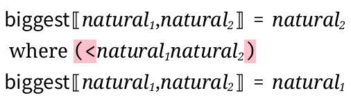
> (define-metafunction lc-lang biggest : natural natural -> natural [(biggest natural_1 natural_2) natural_2 (side-condition (< (term natural_1) (term natural_2))) or natural_1]) > (render-metafunction biggest) 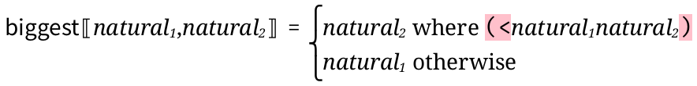
Note that metafunctions are assumed to always return the same results for the same inputs, and their results are cached, unless caching-enabled? is set to #f. Accordingly, if a metafunction is called with the same inputs twice, then its body is only evaluated a single time.
As an example, these metafunctions finds the free variables in an expression in the lc-lang above:
(define-metafunction lc-lang free-vars : e -> (x ...) [(free-vars (e_1 e_2 ...)) (∪ (free-vars e_1) (free-vars e_2) ...)] [(free-vars x) (x)] [(free-vars (λ (x ...) e)) (- (free-vars e) (x ...))])
The first argument to define-metafunction is the grammar (defined above). Following that are three cases, one for each variation of expressions (e in lc-lang). The free variables of an application are the free variables of each of the subterms; the free variables of a variable is just the variable itself, and the free variables of a λ expression are the free variables of the body, minus the bound parameters.
Here are the helper metafunctions used above.
(define-metafunction lc-lang ∪ : (x ...) ... -> (x ...) [(∪ (x_1 ...) (x_2 ...) (x_3 ...) ...) (∪ (x_1 ... x_2 ...) (x_3 ...) ...)] [(∪ (x_1 ...)) (x_1 ...)] [(∪) ()]) (define-metafunction lc-lang - : (x ...) (x ...) -> (x ...) [(- (x ...) ()) (x ...)] [(- (x_1 ... x_2 x_3 ...) (x_2 x_4 ...)) (- (x_1 ... x_3 ...) (x_2 x_4 ...)) (side-condition (not (memq (term x_2) (term (x_3 ...)))))] [(- (x_1 ...) (x_2 x_3 ...)) (- (x_1 ...) (x_3 ...))])
Note the side-condition in the second case of -. It ensures that there is a unique match for that case. Without it, (term (- (x x) x)) would lead to an ambiguous match.
修改于package redex-lib的1.4版本：Added #:post conditions.
修改于1.5版本：Added or clauses.
语法
(define-metafunction/extension f language metafunction-contract [(g pattern ...) term metafunction-extras ...] ...)
For example, define-metafunction/extension may be used to extend the free-vars function above to the forms introduced by the language lc-num-lang.
(define-metafunction/extension free-vars lc-num-lang free-vars-num : e -> (x ...) [(free-vars-num number) ()] [(free-vars-num (+ e_1 e_2)) (∪ (free-vars-num e_1) (free-vars-num e_2))])
语法
(in-domain? (metafunction-name term ...))
语法
(define-judgment-form language mode-spec contract-spec invariant-spec rule rule ...)
mode-spec = #:mode (form-id pos-use ...) contract-spec =
| #:contract (form-id pattern-sequence ...) invariant-spec = #:inv term |
pos-use = I | O rule =
[premise ... dashes rule-name conclusion] |
[conclusion premise ... rule-name] conclusion = (form-id pat/term ...) premise = (judgment-form-id pat/term ...) maybe-ellipsis | (relation-id pat/term ...) maybe-ellipsis | (where pattern term) | (where/hidden pattern term) | (where/error pattern term) | (side-condition term) | (side-condition/hidden term) rule-name =
| string | non-ellipsis-non-dashes-var pat/term = pattern | term maybe-ellipsis =
| ... dashes = --- | ---- | ----- | etc.
When the optional contract-spec declaration is present, Redex dynamically checks that the terms flowing through these positions match the provided patterns, raising an exception recognized by exn:fail:redex? if not. The term in the optional invariant-spec is evaluated after the output positions have been computed and the contract has matched successfully, with variables from the contract bound; a result of #f is considered to be a contract violation and an exception is raised.
> (define-language nats (n ::= z (s n)))
> (define-judgment-form nats #:mode (sum I I O) #:contract (sum n n n) [----------- "zero" (sum z n n)] [(sum n_1 n_2 n_3) ------------------------- "add1" (sum (s n_1) n_2 (s n_3))])
> (judgment-holds (sum (s (s z)) (s z) (s (s (s z))))) #t
> (judgment-holds (sum (s (s z)) (s z) (s (s (s n))))) #t
> (judgment-holds (sum (s (s z)) (s z) (s (s (s (s n)))))) #f
> (judgment-holds (sum (s (s z)) (s z) (s (s (s n)))) n) '(z)
> (judgment-holds (sum (s (s z)) (s z) (s (s (s (s n))))) n) '()
> (judgment-holds (sum (s (s z)) (s z) (s (s (s n)))) (s n)) '((s z))
> (define-judgment-form nats #:mode (sumr O O I) #:contract (sumr n n n) [------------ sumr-z (sumr z n n)] [(sumr n_1 n_2 n_3) -------------------------- sumr-s (sumr (s n_1) n_2 (s n_3))]) > (judgment-holds (sumr n_1 n_2 (s (s z))) (n_1 n_2)) '(((s (s z)) z) ((s z) (s z)) (z (s (s z))))
> (define-judgment-form nats #:mode (le I I) #:contract (le n n) [-------- (le z n)] [(le n_1 n_2) -------------------- (le (s n_1) (s n_2))])
> (define-metafunction nats pred : n -> n or #f [(pred z) #f] [(pred (s n)) n])
> (define-judgment-form nats #:mode (gt I I) #:contract (gt n n) [(where n_3 (pred n_1)) (le n_2 n_3) ---------------------- (gt n_1 n_2)]) > (judgment-holds (gt (s (s z)) (s z))) #t
> (judgment-holds (gt (s z) (s z))) #f
A rule’s side-condition and side-condition/hidden premises are similar to those in reduction-relation and define-metafunction, except that they do not implicitly unquote their right-hand sides. In other words, a premise of the form (side-condition term) is close to the premise (where #t term), except it does not typeset with the “#t = ”, as that would and it holds whenever the expression evaluates to any non #f value (not just #t).
> (define-judgment-form nats #:mode (even I) #:contract (even n) [-------- "evenz" (even z)] [(even n) ---------------- "even2" (even (s (s n)))])
> (define-judgment-form nats #:mode (all-even I) #:contract (all-even (n ...)) [(even n) ... ------------------ (all-even (n ...))]) > (judgment-holds (all-even (z (s (s z)) z))) #t
> (judgment-holds (all-even (z (s (s z)) (s z)))) #f
> (define-language vertices (v a b c))
> (define-judgment-form vertices #:mode (edge I O) #:contract (edge v v) [(edge a b)] [(edge b c)])
> (define-judgment-form vertices #:mode (path I I) #:contract (path v v) [---------- (path v v)] [(path v_2 v_1) -------------- (path v_1 v_2)] [(edge v_1 v_2) (path v_2 v_3) -------------- (path v_1 v_3)])
> (judgment-holds (path a c))
"typing-rules.rkt" —
defines a type system in a way that supports mechanized typesetting. When a typing judgment form can be given a mode, it can also be encoded as a metafunction using where clauses as premises, but Redex cannot typeset that encoding as inference rules. "sos.rkt" —
defines an SOS-style semantics in a way that supports mechanized typesetting. "multi-val.rkt" —
defines a judgment form that serves as a multi-valued metafunction.
(collection-file-path «filename.rkt» "redex" "examples" "define-judgment-form")
语法
(define-extended-judgment-form language judgment-form-id mode-spec contract-spec invariant-spec rule ...)
The mode specification in this judgment form and the original must be the same.
语法
(judgment-holds judgment-or-relation)
(judgment-holds judgment-or-relation term)
judgment-or-relation = (judgment-form-id pat/term ...) | (relation-id pat/term ...)
> (judgment-holds (sum (s (s z)) (s z) n)) #t
> (judgment-holds (sum (s (s z)) (s z) n) n) '((s (s (s z))))
语法
(build-derivations judgment-or-relation)
> (build-derivations (even (s (s z))))
(list
(derivation
'(even (s (s z)))
"even2"
(list (derivation '(even z) "evenz" '()))))
struct
(struct derivation (term name subs) #:extra-constructor-name make-derivation) term : any/c name : (or/c string? #f) subs : (listof derivation?)
The term field holds an s-expression based rendering of the conclusion of the derivation, the name field holds the name of the clause with term as the conclusion, and subs contains the sub-derivations.
See also build-derivations.
语法
语法
语法
(define-relation language relation-contract [(name pattern ...) term ... metafunction-extras ...] ...)
relation-contract =
| form-id ⊂ pattern x ... x pattern | form-id ⊆ pattern × ... × pattern
The contract specification for a relation restricts the patterns that can be used as input to a relation. For each argument to the relation, there should be a single pattern, using x or × to separate the argument contracts.
> (define-language types ((τ σ) int num (τ → τ)))
> (define-relation types subtype ⊆ τ × τ [(subtype int num)] [(subtype (τ_1 → τ_2) (σ_1 → σ_2)) (subtype σ_1 τ_1) (subtype τ_2 σ_2)] [(subtype τ τ)]) > (judgment-holds (subtype int num)) #t
> (judgment-holds (subtype (int → int) (num → num))) #f
> (judgment-holds (subtype (num → int) (num → num))) #t
函数
(judgment-form? v) → boolean?
v : any/c
函数
(IO-judgment-form? v) → boolean?
v : any/c
parameter
(current-traced-metafunctions) → (or/c 'all (listof symbol?))
(current-traced-metafunctions traced-metafunctions) → void? traced-metafunctions : (or/c 'all (listof symbol?))
The tracing looks just like the tracing done by the racket/trace library, except that the first column printed by each traced call indicate if this call to the metafunction is cached. Specifically, a c is printed in the first column if the result is just returned from the cache and a space is printed if the metafunction call is actually performed.
Defaults to '().
4.6 Testing
语法
(test-equal e1 e2 option)
option = #:equiv pred-expr |
pred-expr : (-> any/c any/c any/c)
> (define-language L (bt ::= empty (node any bt bt)) (lt ::= empty (node any lt empty)))
> (define-metafunction L linearize/a : bt lt -> lt [(linearize/a empty lt) lt] [(linearize/a (node any_val bt_left bt_right) lt) (node any_val (linearize/a bt_left (linearize/a bt_right lt)) empty)])
> (define-metafunction L linearize : bt -> lt [(linearize bt) (linearize/a bt empty)])
> (test-equal (term (linearize empty)) (term empty))
> (test-equal (term (linearize (node 1 (node 2 empty empty) (node 3 empty empty)))) (term (node 1 (node 2 (node 3 empty empty) empty) empty))) > (test-results) Both tests passed.
语法
(test-->> rel-expr option ... e1-expr e2-expr ...)
option = #:cycles-ok | #:equiv pred-expr | #:pred pred-expr
rel-expr : (or/c reduction-relation? IO-judgment-form?)
pred-expr : (-> any/c any)
e1-expr : any/c
e2-expr : any/c
If #:pred is specified, it is applied to each reachable term until one of the terms fails to satisfy the predicate (i.e., the predicate returns #f). If that happens, then the test fails and a message is printed with the term that failed to satisfy the predicate.
The procedure supplied after #:equiv is always passed the result of reducing the expression as its first argument and (one of) the expected result(s) as its second argument.
This test uses apply-reduction-relation*, so it does not terminate when the resulting reduction graph is infinite, although it does terminate if there are cycles in the (finite) graph.
If #:cycles-ok is not supplied then any cycles detected are treated as a test failure. If a pred-expr is supplied, then it is used to compare the expected and actual results. If it isn’t supplied, then (default-equiv) is used.
语法
(test--> rel-expr option ... e1-expr e2-expr ...)
option = #:equiv pred-expr
rel-expr : (or/c reduction-relation? IO-judgment-form?)
pred-expr : (-> any/c any/c any/c)
e1-expr : any/c
e2-expr : any/c
> (define-language L (i integer))
> (define R (reduction-relation L (--> i i) (--> i ,(add1 (term i)))))
> (define (mod2=? i j) (= (modulo i 2) (modulo j 2))) > (test--> R #:equiv mod2=? 7 1)
FAILED :10.0
expected: 1
actual: 8
actual: 7
> (test--> R #:equiv mod2=? 7 1 0) > (test-results) 1 test failed (out of 2 total).
语法
(test-->>∃ option ... rel-expr start-expr goal-expr)
option = #:steps steps-expr
rel-expr : (or/c reduction-relation? IO-judgment-form?)
start-expr : any/c
goal-expr :
(or/c (-> any/c any/c) (not/c procedure?))
steps-expr : (or/c natural-number/c +inf.0)
> (define-language L (n natural))
> (define succ-mod8 (reduction-relation L (--> n ,(modulo (add1 (term n)) 8)))) > (test-->>∃ succ-mod8 6 2) > (test-->>∃ succ-mod8 6 even?) > (test-->>∃ succ-mod8 6 8)
FAILED :17.0
term 8 not reachable from 6
> (test-->>∃ #:steps 6 succ-mod8 6 5)
FAILED :18.0
term 5 not reachable from 6 (within 6 steps)
> (test-results) 2 tests failed (out of 4 total).
语法
(test-judgment-holds (judgment-form-or-relation pat/term ...))
语法
(test-predicate p? e)
函数
(test-results) → void?
parameter
(default-equiv) → (-> any/c any/c any/c)
(default-equiv equiv) → void? equiv : (-> any/c any/c any/c)
It defaults to (lambda (lhs rhs) (alpha-equivalent? (default-language) lhs rhs)).
语法
(make-coverage subject)
subject = metafunction | relation-expr
parameter
(relation-coverage) → (listof coverage?)
(relation-coverage tracked) → void? tracked : (listof coverage?)
函数
(covered-cases c) → (listof (cons/c string? natural-number/c))
c : coverage?
> (define-language empty-lang)
> (define-metafunction empty-lang [(plus number_1 number_2) ,(+ (term number_1) (term number_2))])
> (define equals (reduction-relation empty-lang (--> (+) 0 "zero") (--> (+ number) number) (--> (+ number_1 number_2 number ...) (+ (plus number_1 number_2) number ...) "add")))
> (let ([equals-coverage (make-coverage equals)] [plus-coverage (make-coverage plus)]) (parameterize ([relation-coverage (list equals-coverage plus-coverage)]) (apply-reduction-relation* equals (term (+ 1 2 3))) (values (covered-cases equals-coverage) (covered-cases plus-coverage))))
'(("#f:22:0" . 1) ("add" . 2) ("zero" . 0))
'(("#f:21:0" . 2))
语法
(generate-term from-pattern)
(generate-term from-judgment-form) (generate-term from-metafunction) (generate-term from-reduction-relation)
from-pattern = language pattern size-expr kw-args ... | language pattern | language pattern #:i-th index-expr | language pattern #:i-th from-judgment-form =
language #:satisfying (judgment-form-id pattern ...) |
language #:satisfying (judgment-form-id pattern ...) size-expr from-metafunction =
language #:satisfying (metafunction-id pattern ...) = pattern |
language #:satisfying (metafunction-id pattern ...) = pattern size-expr | #:source metafunction size-expr kw-args | #:source metafunction from-reduction-relation =
#:source reduction-relation-expr size-expr kw-args ... | #:source reduction-relation-expr kw-args = #:attempt-num attempts-expr | #:retries retries-expr
size-expr : natural-number/c
attempt-num-expr : natural-number/c
retries-expr : natural-number/c
from-pattern: In the first case, randomly makes an expression matching the given pattern whose size is bounded by size-expr; the second returns a function that accepts a size bound and returns a random term. Calling this function (even with the same size bound) may be more efficient than using the first case.
Examples:> (define-language L (e ::= (e e) (λ (x) e) x) (x ::= a b c)) > (for/list ([i (in-range 10)]) (generate-term L e 3)) '((a (λ (c) b))
((a (λ (c) c)) a)
a
c
((λ (c) (b b)) (λ (a) (b c)))
c
(λ (b) (λ (b) a))
c
(c a)
(c ((c a) a)))
The #:i-th option uses an enumeration of the non-terminals in a language. If index-expr is supplied, generate-term returns the corresponding term and if it isn’t, generate-term returns a function from indices to terms.Example:> (for/list ([i (in-range 9)]) (generate-term L e #:i-th i)) '(a (a a) (λ (a) a) b (a (a a)) (λ (b) a) c ((a a) a) (λ (c) a))
Base type enumerations such as boolean, natural and integer are what you might expect:
Examples:> (for/list ([i (in-range 10)]) (generate-term L boolean #:i-th i)) '(#t #f #t #f #t #f #t #f #t #f)
> (for/list ([i (in-range 10)]) (generate-term L natural #:i-th i)) '(0 1 2 3 4 5 6 7 8 9)
> (for/list ([i (in-range 10)]) (generate-term L integer #:i-th i)) '(0 1 -1 2 -2 3 -3 4 -4 5)
The real base type enumeration consists of all integers and flonums, and the number pattern consists of complex numbers with real and imaginary parts taken from the real enumeration.
Examples:> (for/list ([i (in-range 20)]) (generate-term L real #:i-th i)) '(0
+inf.0
1
-inf.0
-1
+nan.0
2
0.0
-2
4.9406564584125e-324
3
-4.9406564584125e-324
-3
9.8813129168249e-324
4
-9.8813129168249e-324
-4
1.4821969375237e-323
5
-1.4821969375237e-323)
> (for/list ([i (in-range 20)]) (generate-term L number #:i-th i)) '(+inf.0
0
+inf.0+inf.0i
1
0+inf.0i
-inf.0+inf.0i
-inf.0
0+1i
+nan.0+inf.0i
-1
0-inf.0i
0.0+inf.0i
+nan.0
0-1i
4.9406564584125e-324+inf.0i
2
0+nan.0i
-4.9406564584125e-324+inf.0i
0.0
0+2i)
The string enumeration produces all single character strings before going on to strings with multiple characters. For each character it starts the lowercase Latin characters, then uppercase Latin, and then every remaining Unicode character. The variable enumeration is the same, except it produces symbols instead of strings.
Examples:> (generate-term L string #:i-th 0) "a"
> (generate-term L string #:i-th 1) "b"
> (generate-term L string #:i-th 26) "A"
> (generate-term L string #:i-th 27) "B"
> (generate-term L string #:i-th 52) "\u0000"
> (generate-term L string #:i-th 53) "\u0001"
> (generate-term L string #:i-th 956) "μ"
> (generate-term L variable #:i-th 1) 'b
> (generate-term L variable #:i-th 27) 'B
The variable-prefix, variable-except, and variable-not-otherwise-mentioned are defined similarly, as you expect.
Examples:> (define-language L (used ::= a b c) (except ::= (variable-except a)) (unused ::= variable-not-otherwise-mentioned)) > (for/list ([i (in-range 10)]) (generate-term L (variable-prefix a:) #:i-th i)) '(a:a a:b a:c a:d a:e a:f a:g a:h a:i a:j)
> (for/list ([i (in-range 10)]) (generate-term L except #:i-th i)) '(b c d e f g h i j k)
> (for/list ([i (in-range 10)]) (generate-term L unused #:i-th i)) '(d e f g h i j k l m)
Finally, the any pattern enumerates terms of the above base types.Example:> (for/list ([i (in-range 20)]) (generate-term L any #:i-th i)) '(()
(())
+inf.0
(() ())
"a"
((()))
#t
((()) ())
a
(() . +inf.0)
0
((()) . +inf.0)
"b"
(+inf.0)
#f
(+inf.0 ())
b
(+inf.0 . +inf.0)
+inf.0+inf.0i
(() () ()))
In addition, all other pattern types are supported except for mismatch repeat ..._!_ patterns and side-condition patterns.
The enumerators do not repeat terms unless the given pattern is ambiguous. Roughly speaking, the enumerator generates all possible ways that a pattern might be parsed and since ambiguous patterns have multiple ways they might be parsed, those multiple parsings turn into repeated elements in the enumeration.
Example:> (for/list ([i (in-range 9)]) (generate-term L (boolean_1 ... boolean_2 ...) #:i-th i)) '(() (#t) (#t) (#t #t) (#f) (#t #f) (#f) (#f #t) (#f #f))
Other sources of ambiguity are in-hole and overlapping non-terminals.Examples:> (define-language L (e ::= (e e) (λ (x) e) x) (E ::= hole (e E) (E e)) (x ::= a b c)) > (for/list ([i (in-range 9)]) (generate-term L (in-hole E e) #:i-th i)) '(a
(a a)
(a a)
(a (a a))
(λ (a) a)
(a (λ (a) a))
(a a)
((a a) a)
((λ (a) a) a))
> (define-language L (overlap ::= natural integer)) > (for/list ([i (in-range 10)]) (generate-term L overlap #:i-th i)) '(0 0 1 1 2 -1 3 2 4 -2)
For similar reasons, enumerations for mismatch patterns (using _!_) do not work properly when given ambiguous patterns; they may repeat elements of the enumeration.Examples:> (define-language Bad (ambig ::= (x ... x ...))) > (generate-term Bad (ambig_!_1 ambig_!_1) #:i-th 4) '(() (x x))
In this case, the elements of the resulting list are the same, even though they should not be, according to the pattern. Internally, the enumerator has discovered two different ways to generate ambig (one where the x comes from the first ellipses and one from the second) but those two different ways produce the same term and so the enumerator incorrectly produces (x x).See also redex-enum.
from-judgment-form: Randomly picks a term that satisfies the given use of the judgment form.
Examples:> (define-language L (nat ::= Z (S nat))) > (define-judgment-form L #:mode (sum I I O) [--------------- (sum Z nat nat)] [(sum nat_1 nat_2 nat_3) ------------------------------- (sum (S nat_1) nat_2 (S nat_3))]) > (for/list ([i (in-range 10)]) (generate-term L #:satisfying (sum nat_1 nat_2 nat_3) 3)) '((sum (S (S Z)) (S (S Z)) (S (S (S (S Z)))))
(sum (S (S Z)) Z (S (S Z)))
(sum (S (S (S Z))) Z (S (S (S Z))))
(sum Z Z Z)
(sum (S (S (S (S Z)))) Z (S (S (S (S Z)))))
(sum Z Z Z)
(sum (S (S (S Z))) (S (S Z)) (S (S (S (S (S Z))))))
(sum (S Z) (S (S Z)) (S (S (S Z))))
(sum (S (S (S Z))) (S Z) (S (S (S (S Z)))))
(sum (S (S Z)) (S (S Z)) (S (S (S (S Z))))))
- from-metafunction: The first form randomly picks a term that satisfies the given invocation of the metafunction, using techniques similar to how the from-judgment-form case works. The second form uses a more naive approach; it simply generates terms that match the patterns of the cases of the metafunction; it does not consider the results of the metafunctions, nor does it consider patterns from earlier cases when generating terms based on a particular case. The third case is like the second, except it returns a function that accepts the size and keywords arguments that may be more efficient if multiple random terms are generated.Examples:
> (define-language L (n number)) > (define-metafunction L [(F one-clause n) ()] [(F another-clause n) ()]) > (for/list ([i (in-range 10)]) (generate-term #:source F 5)) '((another-clause 2)
(another-clause 4)
(one-clause 1)
(another-clause 1)
(one-clause 0)
(another-clause 0)
(another-clause 0)
(another-clause 3)
(another-clause 1)
(another-clause 10))
from-reduction-relation: In the first case, generate-term randomly picks a rule from the reduction relation and tries to pick a term that satisfies its domain pattern, returning that. The second case returns a function that accepts the size and keyword arguments that may be more efficient if multiple random terms are generated.
Examples:> (define-language L (n number)) > (for/list ([i (in-range 10)]) (generate-term #:source (reduction-relation L (--> (one-clause n) ()) (--> (another-clause n) ())) 5)) '((one-clause 2)
(one-clause 0)
(another-clause 2)
(another-clause 0)
(another-clause 4)
(another-clause 2)
(one-clause 5)
(one-clause 0)
(one-clause 0)
(another-clause 0))
The argument size-expr bounds the height of the generated term (measured as the height of its parse tree).
The optional keyword argument attempt-num-expr (default 1) provides coarse grained control over the random decisions made during generation; increasing attempt-num-expr tends to increase the complexity of the result. For example, the absolute values of numbers chosen for integer patterns increase with attempt-num-expr.
The random generation process does not actively consider the constraints imposed by side-condition or _!_ patterns; instead, it uses a “guess and check” strategy in which it freely generates candidate terms then tests whether they happen to satisfy the constraints, repeating as necessary. The optional keyword argument retries-expr (default 100) bounds the number of times that generate-term retries the generation of any pattern. If generate-term is unable to produce a satisfying term after retries-expr attempts, it raises an exception recognized by exn:fail:redex:generation-failure?.
语法
(redex-enum language pattern)
It constructs a two-way enumeration only in some cases. The pattern must be unambiguous and there are other technical shortcomings of the implementation as well that cause the result to be a one-way enumeration in some situations.
> (define-language L (e ::= (e e) x (λ (x) e)) (x ::= variable-not-otherwise-mentioned)) > (from-nat (redex-enum L e) 3886654839907963757723234276487685940) '(λ (f) (f (f (f x))))
> (from-nat (redex-enum L e) 3886654839907963757723234276487685942) '(c (f (f (f x))))
> (from-nat (redex-enum L e) 3886654839907963757723234276487685945) '(((a a) a) (f (f (f x))))
> (to-nat (redex-enum L e) (term (λ (f) ((λ (x) (f (x x))) (λ (x) (f (x x))))))) 68069248527054969607740967414758416542534392945933384867539062268798775005
语法
(redex-index language pattern term)
This is useful when the pattern is ambiguous as you might still learn of an index that corresponds to the term even though the enumeration that redex-enum produces is a one-way enumeration.
> (define-language L (e ::= (e e) x (λ (x) e)) (x ::= variable-not-otherwise-mentioned))
> (redex-index L e (term (λ (f) ((λ (x) (f (x x))) (λ (x) (f (x x))))))) 68069248527054969607740967414758416542534392945933384867539062268798775005
> (define-language L ; e is an ambiguous non-terminal ; because there are multiple ways to ; parse (cons (λ (x) x) (λ (x) x)) (e ::= (e e) x (cons e e) v) (v ::= (cons v v) (λ (x) e)) (x ::= variable-not-otherwise-mentioned))
> (redex-index L e (term ((λ (x) (x x)) (λ (x) (x x))))) 366642754084173391502
语法
(redex-check template property-expr kw-arg ...)
template = language pattern | language pattern #:ad-hoc | language pattern #:in-order | language pattern #:uniform-at-random p-value | language pattern #:enum bound |
language #:satisfying (judgment-form-id pattern ...) |
language #:satisfying (metafunction-id pattern ...) = pattern kw-arg = #:attempts attempts-expr | #:source metafunction | #:source relation-expr | #:retries retries-expr | #:print? print?-expr | #:attempt-size attempt-size-expr | #:prepare prepare-expr | #:keep-going? keep-going?-expr
property-expr : any/c
attempts-expr : natural-number/c
relation-expr : reduction-relation?
retries-expr : natural-number/c
print?-expr : any/c
attempt-size-expr : (-> natural-number/c natural-number/c)
prepare-expr : (-> any/c any/c)
language pattern: In this case, redex-check uses an ad hoc strategy for generating pattern. For the first 10 seconds, it uses in-order enumeration to pick terms. After that, it alternates back and forth between in-order enumeration and the ad hoc random generator. After the 10 minute mark, it switches over to using just the ad hoc random generator.
language pattern #:ad-hoc: In this case, redex-check uses an ad hoc random generator to generate terms that match pattern.
language pattern #:in-order: In this case, redex-check uses an enumeration of pattern, checking each t one at a time
language pattern #:uniform-at-random p-value: that to index into an enumeration of pattern. If the enumeration is finite, redex-check picks a natural number uniformly at random; if it isn’t, redex-check uses a geometric distribution with p-value as its probability of zero to pick the number of bits in the index and then picks a number uniformly at random with that number of bits.
language pattern #:enum bound: This is similar to #:uniform-at-random, except that Redex always picks a random natural number less than bound to index into the enumeration
language #:satisfying (judgment-form-id pattern ...): Generates terms that match pattern and satisfy the judgment form.
language #:satisfying (metafunction-id pattern ...) = pattern: Generates terms matching the two patterns, such that if the first is the argument to the metafunction, the second will be the result.
redex-check generates at most attempts-expr (default (default-check-attempts)) random terms in its search. The size and complexity of these terms tend to increase with each failed attempt. The #:attempt-size keyword determines the rate at which terms grow by supplying a function that bounds term size based on the number of failed attempts (see generate-term’s size-expr argument). By default, the bound grows according to the default-attempt-size function.
returning a counterexample structure when the test reveals a counterexample,
returning #t when all tests pass, or
raising a exn:fail:redex:test when checking the property raises an exception.
The optional #:prepare keyword supplies a function that transforms each generated example before redex-check checks property-expr. This keyword may be useful when property-expr takes the form of a conditional, and a term chosen freely from the grammar is unlikely to satisfy the conditional’s hypothesis. In some such cases, the prepare keyword can be used to increase the probability that an example satisfies the hypothesis.
The #:retries keyword behaves identically as in generate-term, controlling the number of times the generation of any pattern will be reattempted. It can’t be used together with #:satisfying.
If keep-going?-expr produces any non-#f value, redex-check will stop only when it hits the limit on the number of attempts showing all of the errors it finds. This argument is allowed only when print?-expr is not #f.
When passed a metafunction or reduction relation via the optional #:source argument, redex-check distributes its attempts across the left-hand sides of that metafunction/relation by using those patterns, rather than pattern, as the basis of its generation. If any left-hand side generates a term that does not match pattern, then the test input is discarded. #:source cannot be used with #:satisfying. See also check-reduction-relation and check-metafunction.
> (define-language empty-lang) > (random-seed 0)
> (redex-check empty-lang ((number_1 ...) (number_2 ...)) (equal? (reverse (append (term (number_1 ...)) (term (number_2 ...)))) (append (reverse (term (number_1 ...))) (reverse (term (number_2 ...))))))
redex-check: counterexample found after 11 attempts:
((+inf.0) (0))
> (redex-check empty-lang ((number_1 ...) (number_2 ...)) (equal? (reverse (append (term (number_1 ...)) (term (number_2 ...)))) (append (reverse (term (number_2 ...))) (reverse (term (number_1 ...))))) #:attempts 200) redex-check: no counterexamples in 200 attempts
> (let ([R (reduction-relation empty-lang (--> (Σ) 0) (--> (Σ number) number) (--> (Σ number_1 number_2 number_3 ...) (Σ ,(+ (term number_1) (term number_2)) number_3 ...)))]) (redex-check empty-lang (Σ number ...) (printf "~s\n" (term (number ...))) #:attempts 3 #:source R))
()
(0)
(0 2)
redex-check: no counterexamples in 3 attempts (tried 1 attempt with each clause)
> (redex-check empty-lang number (begin (printf "checking ~s\n" (term number)) (positive? (term number))) #:prepare (λ (n) (printf "preparing ~s; " n) (add1 (abs (real-part n)))) #:attempts 3)
preparing +inf.0; checking +inf.0
preparing 0; checking 1
preparing +inf.0+inf.0i; checking +inf.0
redex-check: no counterexamples in 3 attempts
> (define-language L (nat ::= Z (S nat)))
> (define-judgment-form L #:mode (sum I I O) [--------------- (sum Z nat nat)] [(sum nat_1 nat_2 nat_3) ------------------------------- (sum (S nat_1) nat_2 (S nat_3))])
> (redex-check L #:satisfying (sum nat_1 nat_2 nat_3) (equal? (judgment-holds (sum nat_1 nat_2 nat_4) nat_4) (term (nat_3))) #:attempts 100) redex-check: no counterexamples in 100 attempts
> (redex-check L #:satisfying (sum nat_1 nat_2 nat_3) (equal? (term nat_1) (term nat_2)))
redex-check: counterexample found after 1 attempt:
(sum (S (S Z)) (S Z) (S (S (S Z))))
修改于package redex-lib的1.10版本：Instead of raising an error, redex-check now discards test cases that don’t match the given pattern when using #:source.
parameter
(depth-dependent-order?) → (or/c boolean? 'random)
(depth-dependent-order? depth-dependent) → void? depth-dependent : (or/c boolean? 'random)
= 'random
语法
(redex-generator language-id satisfying size-expr)
satisfying = (judgment-form-id pattern ...) | (metafunction-id pattern ...) = pattern
size-expr : natural-number/c
Returns a thunk that, each time it is called, either generates a random s-expression based on satisfying or fails to (and returns #f). The terms returned by a particular thunk are guaranteed to be distinct.
> (define-language L (nat ::= Z (S nat)))
> (define-judgment-form L #:mode (sum I I O) [--------------- (sum Z nat nat)] [(sum nat_1 nat_2 nat_3) ------------------------------- (sum (S nat_1) nat_2 (S nat_3))]) > (define gen-sum (redex-generator L (sum nat_1 nat_2 nat_3) 3))
> (for/list ([_ (in-range 5)]) (gen-sum))
'((sum (S (S (S Z))) (S (S Z)) (S (S (S (S (S Z))))))
(sum (S (S (S (S Z)))) (S Z) (S (S (S (S (S Z))))))
(sum (S (S (S (S (S Z))))) Z (S (S (S (S (S Z))))))
(sum (S (S (S (S (S (S Z)))))) (S (S Z)) (S (S (S (S (S (S (S (S Z)))))))))
(sum (S (S (S (S (S (S (S Z))))))) (S Z) (S (S (S (S (S (S (S (S Z))))))))))
struct
(struct counterexample (term) #:extra-constructor-name make-counterexample #:transparent) term : any/c
struct
(struct exn:fail:redex:test exn:fail:redex (source term) #:extra-constructor-name make-exn:fail:redex:test) source : exn:fail? term : any/c
语法
(check-reduction-relation relation property kw-args ...)
kw-arg = #:attempts attempts-expr | #:retries retries-expr | #:print? print?-expr | #:attempt-size attempt-size-expr | #:prepare prepare-expr
property : (-> any/c any/c)
attempts-expr : natural-number/c
retries-expr : natural-number/c
print?-expr : any/c
attempt-size-expr : (-> natural-number/c natural-number/c)
prepare-expr : (-> any/c any/c)
Only the primary pattern of each case’s left-hand side is considered. If there are where clauses or side-conditions (or anything else from the red-extras portion of the grammar), they are ignored.
(redex-check L any (property (term any)) #:attempts (* n attempts) #:source relation)
语法
(check-metafunction metafunction property kw-args ...)
kw-arg = #:attempts attempts-expr | #:retries retries-expr | #:print? print?-expr | #:attempt-size attempt-size-expr | #:prepare prepare-expr
property : (-> (listof any/c) any/c)
attempts-expr : natural-number/c
retries-expr : natural-number/c
print?-expr : any/c
attempt-size-expr : (-> natural-number/c natural-number/c)
prepare-expr : (-> (listof any/c) (listof any/c))
Only the primary pattern of each case’s left-hand side is considered. If there are where clauses or side-conditions (or anything else from the metafunction-extras portion of the grammar), they are ignored.
> (define-language empty-lang)
> (define-metafunction empty-lang Σ : number ... -> number [(Σ) 0] [(Σ number) number] [(Σ number_1 number_2) ,(+ (term number_1) (term number_2))] [(Σ number_1 number_2 ...) (Σ number_1 (Σ number_2 ...))])
> (check-metafunction Σ (λ (args) (printf "trying ~s\n" args) (equal? (apply + args) (term (Σ ,@args)))) #:attempts 2)
trying ()
trying ()
trying (0)
trying (0)
trying (2 1)
trying (0 1)
trying (0)
trying (1)
check-metafunction: no counterexamples in 8 attempts (tried 2 attempts with each clause)
函数
n : natural-number/c
parameter
(default-check-attempts attempts) → void? attempts : natural-number/c
parameter
(redex-pseudo-random-generator generator) → void? generator : pseudo-random-generator?
函数
v : any/c
It is easy to write grammars and reduction rules that are subtly wrong. Typically such mistakes result in examples that get stuck when viewed in a traces window.
The best way to debug such programs is to find an expression that looks like it should reduce, but doesn’t, then try to find out which pattern is failing to match. To do so, use the redex-match form.
In particular, first check if the term in question matches the your system’s main non-terminal (typically the expression or program non-terminal). If it does not match, simplify the term piece by piece to determine whether the problem is in the term or the grammar.
If the term does match your system’s main non-terminal, determine by inspection which reduction rules should apply. For each such rule, repeat the above term-pattern debugging procedure, this time using the rule’s left-hand side pattern instead of the system’s main non-terminal. In addition to simplifying the term, also consider simplifying the pattern.
If the term matches the left-hand side, but the rule does not apply, then one of the rule’s side-condition or where clauses is not satisfied. Using the bindings reported by redex-match, check each side-condition expression and each where pattern-match to discover which clause is preventing the rule’s application.
4.7 GUI
| (require redex/gui) | package： redex-gui-lib |
This section describes the GUI tools that Redex provides for exploring reduction sequences.
函数
(traces reductions expr [ #:multiple? multiple? #:reduce reduce #:pred pred #:pp pp #:colors colors #:racket-colors? racket-colors? #:scheme-colors? scheme-colors? #:filter term-filter #:x-spacing x-spacing #:y-spacing y-spacing #:layout layout #:edge-labels? edge-labels? #:edge-label-font edge-label-font #:graph-pasteboard-mixin graph-pasteboard-mixin]) → void? reductions : (or/c reduction-relation? IO-judgment-form?) expr : (or/c any/c (listof any/c)) multiple? : boolean? = #f
reduce :
(-> reduction-relation? any/c (listof (list/c (union false/c string?) any/c))) = apply-reduction-relation/tag-with-names
pred :
(or/c (-> sexp any) (-> sexp term-node? any)) = (λ (x) #t)
pp :
(or/c (any -> string) (any output-port number (is-a?/c text%) -> void)) = default-pretty-printer
colors :
(listof (cons/c string? (and/c (listof (or/c string? (is-a?/c color%))) (λ (x) (<= 0 (length x) 6))))) = '() racket-colors? : boolean? = #t scheme-colors? : boolean? = racket-colors?
term-filter : (-> any/c (or/c #f string?) any/c) = (λ (x y) #t) x-spacing : real? = 15 y-spacing : real? = 15 layout : (-> (listof term-node?) void?) = void edge-labels? : boolean? = #t edge-label-font : (or/c #f (is-a?/c font%)) = #f
graph-pasteboard-mixin : (make-mixin-contract graph-pasteboard<%>) = values
The reduce function applies the reduction relation to the terms. By default, it is apply-reduction-relation/tag-with-names; it may be changed to only return a subset of the possible reductions, for example, but it must satisfy the same contract as apply-reduction-relation/tag-with-names.
If reductions is an IO-judgment-form?, then the judgment form is treated as a reduction relation. The initial input position is the given expr and the output position becomes the next input.
The pred function indicates if a term has a particular property. If it returns #f, the term is displayed with a pink background. If it returns a string or a color% object, the term is displayed with a background of that color (using the-color-database to map the string to a color). If it returns any other value, the term is displayed normally. If the pred function accepts two arguments, a term-node corresponding to the term is passed to the predicate. This lets the predicate function explore the (names of the) reductions that led to this term, using term-node-children, term-node-parents, and term-node-labels.
The pred function may be called more than once per node. In particular, it is called each time an edge is added to a node. The latest value returned determines the color.
The pp function is used to specially print expressions. It must either accept one or four arguments. If it accepts one argument, it will be passed each term and is expected to return a string to display the term.
If the pp function takes four arguments, it should render its first argument into the port (its second argument) with width at most given by the number (its third argument). The final argument is the text where the port is connected – characters written to the port go to the end of the editor. Use write-special to send snip% objects or 2htdp/image images (or other things that subscribe to file/convertible or pict/convert) directly to the editor.
The colors argument, if provided, specifies a list of reduction-name/color-list pairs. The traces gui will color arrows drawn because of the given reduction name with the given color instead of using the default color.
The cdr of each of the elements of colors is a list of colors, organized in pairs. The first two colors cover the colors of the line and the border around the arrow head, the first when the mouse is over a graph node that is connected to that arrow, and the second for when the mouse is not over that arrow. Similarly, the next colors are for the text drawn on the arrow and the last two are for the color that fills the arrow head. If fewer than six colors are specified, the specified colors are used and then defaults are filled in for the remaining colors.
The racket-colors? argument (along with scheme-colors?, retained for backward compatibility), controls the coloring of each window. When racket-colors? is #t (and scheme-colors? is #t too), traces colors the contents according to DrRacket’s Racket-mode color scheme; otherwise, traces uses a black color scheme.
The term-filter function is called each time a new node is about to be inserted into the graph. If the filter returns false, the node is not inserted into the graph.
The x-spacing and y-spacing arguments control the amount of space put between the snips in the default layout.
The layout argument is called (with all of the terms) when new terms are inserted into the window. In general, it is called after new terms are inserted in response to the user clicking on the reduce button, and after the initial set of terms is inserted. See also term-node-set-position!.
If edge-labels? is #t (the default), then edge labels are drawn; otherwise not.
The edge-label-font argument is used as the font on the edge labels. If #f is supplied, the dc<%> object’s default font is used.
The traces library uses an instance of the mrlib/graph library’s graph-pasteboard<%> interface to layout the graphs. Sometimes, overriding one of its methods can help give finer-grained control over the layout, so the graph-pasteboard-mixin is applied to the class before it is instantiated. Also note that all of the snips inserted into the editor by this library have a get-term-node method which returns the snip’s term-node.
(define/contract (unpair z) (-> exact-nonnegative-integer? (list/c exact-nonnegative-integer? exact-nonnegative-integer?)) (define i (integer-sqrt z)) (define i2 (* i i)) (cond [(< (- z i2) i) (list (- z i2) i)] [else (list i (- z i2 i))])) (define/contract (pair x y) (-> exact-nonnegative-integer? exact-nonnegative-integer? exact-nonnegative-integer?) (if (= x (max x y)) (+ (* x x) x y) (+ (* y y) x)))
(define-language L (n ::= natural)) (define red (reduction-relation L (--> (n_1 n_2) ,(unpair (+ 1 (pair (term n_1) (term n_2))))))) (traces red (term (0 0)))
(require 2htdp/image) (define/contract (two-stars point-count1 point-count2) (-> (>=/c 2) (>=/c 2) image?) (overlay (radial-star (+ 2 point-count1) 10 60 "solid" (make-color 255 0 255 150)) (radial-star (+ 2 point-count2) 10 60 "solid" "cornflowerblue")))
(traces red (term (0 0)) #:pp (λ (term port w txt) (write-special (two-stars (+ 2 (list-ref term 0)) (+ 2 (list-ref term 1))) port)))
函数
(traces/ps reductions expr file [ #:multiple? multiple? #:reduce reduce #:pred pred #:pp pp #:colors colors #:filter term-filter #:layout layout #:x-spacing x-spacing #:y-spacing y-spacing #:edge-labels? edge-labels? #:edge-label-font edge-label-font #:graph-pasteboard-mixin graph-pasteboard-mixin] #:post-process post-process) → void? reductions : (or/c reduction-relation? IO-judgment-form?) expr : (or/c any/c (listof any/c)) file : (or/c path-string? path?) multiple? : boolean? = #f
reduce :
(-> reduction-relation? any/c (listof (list/c (union false/c string?) any/c))) = apply-reduction-relation/tag-with-names
pred :
(or/c (-> sexp any) (-> sexp term-node? any)) = (λ (x) #t)
pp :
(or/c (any -> string) (any output-port number (is-a?/c text%) -> void)) = default-pretty-printer
colors :
(listof (cons/c string? (and/c (listof (or/c string? (is-a?/c color%))) (λ (x) (<= 0 (length x) 6))))) = '()
term-filter : (-> any/c (or/c #f string?) any/c) = (λ (x y) #t) layout : (-> (listof term-node?) void?) = void x-spacing : number? = 15 y-spacing : number? = 15 edge-labels? : boolean? = #t edge-label-font : (or/c #f (is-a?/c font%)) = #f
graph-pasteboard-mixin : (make-mixin-contract graph-pasteboard<%>) = values post-process : (-> (is-a?/c graph-pasteboard<%>) any/c)
All of the arguments behave like the arguments to traces, with the exception of the post-process argument. It is called just before the PostScript is created with the graph pasteboard.
函数
reductions : (or/c reduction-relation? IO-judgment-form?) t : any/c
pp :
(or/c (any -> string) (any output-port number (is-a?/c text%) -> void)) = default-pretty-printer
The pp argument is the same as to the traces function but is here for backwards compatibility only and should not be changed for most uses, but instead adjusted with pretty-print-parameters. Specifically, the highlighting shown in the stepper window can be wrong if default-pretty-printer does not print sufficiently similarly to how pretty-print prints (when adjusted by pretty-print-parameters’s behavior, of course).
函数
(stepper/seed reductions seed [pp]) → void?
reductions : (or/c reduction-relation? IO-judgment-form?) seed : (cons/c any/c (listof any/c))
pp :
(or/c (any -> string) (any output-port number (is-a?/c text%) -> void)) = default-pretty-printer
函数
(show-derivations derivations [ #:pp pp #:racket-colors? racket-colors? #:init-derivation init-derivation]) → any derivations : (cons/c derivation? (listof derivation?))
pp :
(or/c (any -> string) (any output-port number (is-a?/c text%) -> void)) = default-pretty-printer racket-colors? : boolean? = #f init-derivation : exact-nonnegative-integer? = 0
The pp and racket-colors? arguments are like those to traces.
The initial derivation shown in the window is chosen by init-derivation, used as an index into derivations.
函数
(derivation/ps derivation filename [ #:pp pp #:racket-colors? racket-colors?] #:post-process post-process) → void? derivation : derivation? filename : path-string?
pp :
(or/c (any -> string) (any output-port number (is-a?/c text%) -> void)) = default-pretty-printer racket-colors? : boolean? = #f post-process : (-> (is-a?/c pasteboard%) any)
函数
(term-node-children tn) → (listof term-node?)
tn : term-node?
Note that this function does not return all terms that this term reduces to – only those that are currently in the graph.
函数
(term-node-parents tn) → (listof term-node?)
tn : term-node?
函数
(term-node-labels tn) → (listof (or/c false/c string?))
tn : term-node?
函数
(term-node-set-color! tn color) → void?
tn : term-node? color : (or/c string? (is-a?/c color%) false/c)
函数
(term-node-color tn) → (or/c string? (is-a?/c color%) false/c)
tn : term-node?
函数
(term-node-set-red! tn red?) → void?
tn : term-node? red? : boolean?
函数
(term-node-expr tn) → any
tn : term-node?
函数
(term-node-set-position! tn x y) → void?
tn : term-node? x : (and/c real? positive?) y : (and/c real? positive?)
函数
(term-node-x tn) → real?
tn : term-node?
函数
(term-node-y tn) → real?
tn : term-node?
函数
(term-node-width tn) → real?
tn : term-node?
函数
(term-node-height tn) → real?
tn : term-node?
函数
(term-node? v) → boolean?
v : any/c
parameter
(reduction-steps-cutoff cutoff) → void? cutoff : number?
parameter
(initial-font-size size) → void? size : number?
If its value is a number, then the number is used as the width for every term. If its value is a function, then the function is called with each term and the resulting number is used as the width.
parameter
(dark-pen-color) → (or/c string? (is-a?/c color<%>))
(dark-pen-color color) → void? color : (or/c string? (is-a?/c color<%>))
parameter
(dark-brush-color) → (or/c string? (is-a?/c color<%>))
(dark-brush-color color) → void? color : (or/c string? (is-a?/c color<%>))
parameter
(light-pen-color) → (or/c string? (is-a?/c color<%>))
(light-pen-color color) → void? color : (or/c string? (is-a?/c color<%>))
parameter
(light-brush-color) → (or/c string? (is-a?/c color<%>))
(light-brush-color color) → void? color : (or/c string? (is-a?/c color<%>))
parameter
(dark-text-color) → (or/c string? (is-a?/c color<%>))
(dark-text-color color) → void? color : (or/c string? (is-a?/c color<%>))
parameter
(light-text-color) → (or/c string? (is-a?/c color<%>))
(light-text-color color) → void? color : (or/c string? (is-a?/c color<%>))
The dark colors are used when the mouse is over one of the nodes that is connected to this edge. The light colors are used when it isn’t.
The pen colors control the color of the line. The brush colors control the color used to fill the arrowhead and the text colors control the color used to draw the label on the edge.
parameter
(pretty-print-parameters) → (-> (-> any/c) any/c)
(pretty-print-parameters f) → void? f : (-> (-> any/c) any/c)
Specifically, whenever default-pretty-printer prints something it calls f with a thunk that does the actual printing. Thus, f can adjust pretty-print’s parameters to adjust how printing happens.
函数
(default-pretty-printer v port width text) → void?
v : any/c port : output-port? width : exact-nonnegative-integer? text : (is-a?/c text%)
This function uses the value of pretty-print-parameters to adjust how it prints.
It sets the pretty-print-columns parameter to width, and it sets pretty-print-size-hook and pretty-print-print-hook to print holes and the symbol 'hole to match the way they are input in a term expression.
4.8 Typesetting
| (require redex/pict) | package： redex-pict-lib |
The redex/pict library provides functions designed to typeset grammars, reduction relations, and metafunctions.
Each grammar, reduction relation, and metafunction can be saved in a ".ps" file (as encapsulated PostScript), or can be turned into a pict for viewing in the REPL or using with Slideshow (see the pict library).
For producing papers with Scribble, just include the picts inline in the paper and pass the --dvipdf flag to generate the ".pdf" file. For producing papers with LaTeX, create ".ps" files from Redex and use latex and dvipdf to create ".pdf" files (using pdflatex with ".pdf" files will work but the results will not look as good onscreen).
4.8.1 Picts, PDF, & PostScript
This section documents two classes of operations, one for direct use of creating postscript figures for use in papers and for use in DrRacket to easily adjust the typesetting: render-term, render-language, render-reduction-relation, render-relation, render-judgment-form, render-metafunctions, and render-lw, and one for use in combination with other libraries that operate on picts term->pict, language->pict, reduction-relation->pict, relation->pict, judgment-form->pict, metafunction->pict, and lw->pict. The primary difference between these functions is that the former list sets dc-for-text-size and the latter does not.
语法
(render-term lang term)
(render-term lang term file)
> (define-language nums (AE K (+ AE AE)) ; binary constants (K · (1 K) (0 K))) > (render-term nums (+ (1 (0 (1 ·))) (+ (1 (1 (1 ·))) (1 (0 (0 ·)))))) 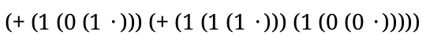
> (let ([x (term (+ (1 (1 (1 ·))) (1 (0 (0 ·)))))]) (render-term nums x))
See render-language for more details on the construction of the pict.
语法
(term->pict lang term)
The first argument is expected to be a compiled-lang? and the second argument is expected to be a term (without the term wrapper). The formatting in the term argument is used to determine how the resulting pict will look.
This function is primarily designed to be used with Slideshow or with other tools that combine picts together.
> (term->pict nums (+ 1 (+ 3 4))) 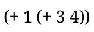
函数
(render-term/pretty-write lang term [ filename #:width width]) → (or/c void? pict?) lang : compiled-lang? term : any/c filename : (or/c path-string? #f) = #f
width : (or/c exact-positive-integer? 'infinity) = (pretty-print-columns)
If filename is provided, the pict is saved as a pdf to that file.
> (render-term/pretty-write nums '(+ (1 1 1) (1 0 1))) 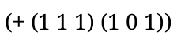
函数
(term->pict/pretty-write lang term [ #:width width]) → pict? lang : compiled-lang? term : any/c
width : (or/c exact-positive-integer? 'infinity) = (pretty-print-columns)
> (term->pict/pretty-write nums '(+ (1 1 1) (1 0 1)))

函数
(render-language lang [file #:nts nts]) → (if file void? pict?)
lang : compiled-lang? file : (or/c false/c path-string?) = #f
nts : (or/c false/c (listof (or/c string? symbol?))) = (render-language-nts)
This function parameterizes dc-for-text-size to install a relevant dc: a bitmap-dc% or a post-script-dc%, depending on whether file is a path.
See language->pict if you are using Slideshow or are otherwise setting dc-for-text-size.
> (render-language nums) 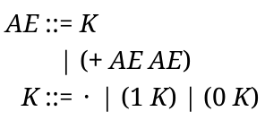
函数
(language->pict lang [#:nts nts]) → pict?
lang : compiled-lang?
nts : (or/c false/c (listof (or/c string? symbol?))) = (render-language-nts)
This function is primarily designed to be used with Slideshow or with other tools that combine picts together.
> (language->pict nums)
函数
(render-reduction-relation rel [ file #:style style]) → (if file void? pict?) rel : reduction-relation? file : (or/c false/c path-string?) = #f style : reduction-rule-style/c = (rule-pict-style)
This function parameterizes dc-for-text-size to install a relevant dc: a bitmap-dc% or a post-script-dc%, depending on whether file is a path. See also reduction-relation->pict.
The following forms of arrows can be typeset:
--> -+> ==> -> => ..> >-> ~~> ~> :-> :–> c-> –>> >– –< >>– –<<
> (render-reduction-relation (reduction-relation nums (--> (+ AE ()) AE) (--> (+ AE_1 AE_2) (+ AE_2 AE_1)))) 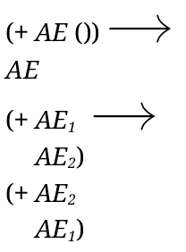
函数
(reduction-relation->pict r [#:style style]) → pict?
r : reduction-relation? style : reduction-rule-style/c = (rule-pict-style)
This function is primarily designed to be used with Slideshow or with other tools that combine picts together.
> (reduction-relation->pict (reduction-relation nums (--> (+ (+ AE_1 AE_2) AE_3) (+ AE_1 (+ AE_2 AE_3))))) 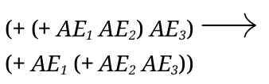
语法
(render-metafunction metafunction-name maybe-contract)
(render-metafunction metafunction-name filename maybe-contract)
语法
(render-metafunctions metafunction-name ... maybe-filename maybe-contract)
maybe-filename =
| #:file filename | #:filename filename maybe-contract? =
| #:contract? bool-expr
Similarly, render-metafunctions accepts multiple metafunctions and renders them together, lining up all of the clauses together.
Parameters that affect rendering include metafunction-pict-style, linebreaks, sc-linebreaks, and metafunction-cases.
If the metafunctions have contracts, they are typeset as the first lines of the output unless the expression following #:contract? evaluates to #f (which is the default).
This function sets dc-for-text-size. See also metafunction->pict and metafunctions->pict.
> (define-metafunction nums add : K K -> K [(add K ·) K] [(add · K) K] [(add (0 K_1) (0 K_2)) (0 (add K_1 K_2))] [(add (1 K_1) (0 K_2)) (1 (add K_1 K_2))] [(add (0 K_1) (1 K_2)) (1 (add K_1 K_2))] [(add (1 K_1) (1 K_2)) (0 (add (1 ·) (add K_1 K_2)))]) > (render-metafunction add #:contract? #t) 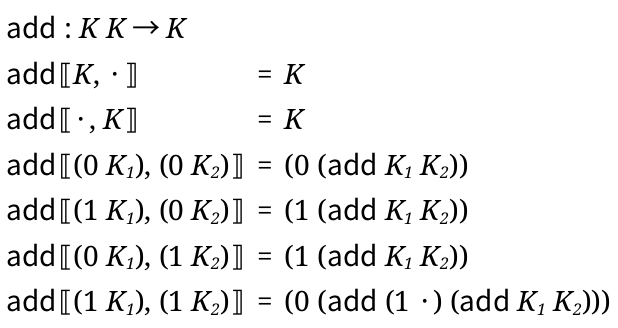
修改于package redex-pict-lib的1.3版本：Added #:contract? keyword argument.
语法
(metafunction->pict metafunction-name maybe-contract?)
> (metafunction->pict add) 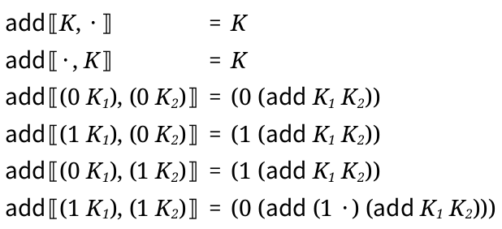
修改于package redex-pict-lib的1.3版本：Added #:contract? keyword argument.
语法
(metafunctions->pict metafunction-name ...)
> (define-metafunction nums to-nat : K -> natural [(to-nat ·) 0] [(to-nat (0 K)) ,(* 2 (term (to-nat K)))] [(to-nat (1 K)) ,(+ 1 (* 2 (term (to-nat K))))])
> (metafunctions->pict add to-nat) 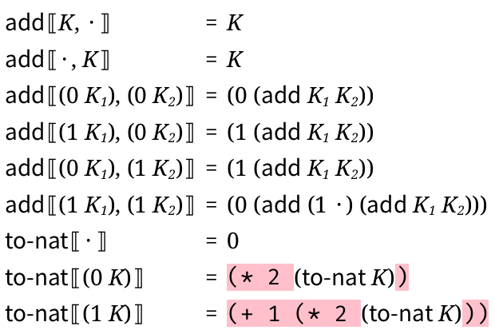
语法
(render-relation relation-name)
语法
(render-relation relation-name filename)
This function sets dc-for-text-size. See also relation->pict.
语法
(render-judgment-form judgment-form-name)
语法
(render-judgment-form judgment-form-name filename)
> (define-judgment-form nums #:mode (eq I I) #:contract (eq K K) [--------- eq-· (eq · ·)] [(eq K ·) ------------ eq-0-l (eq (0 K) ·)] [(eq · K) ------------ eq-0-r (eq · (0 K))] [(eq K_1 K_2) -------------------- eq-0 (eq (0 K_1) (0 K_2))] [(eq K_1 K_2) -------------------- eq-1 (eq (1 K_1) (1 K_2))]) > (render-judgment-form eq) 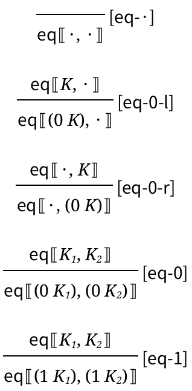
> (parameterize ([judgment-form-cases '("eq-·")]) (render-judgment-form eq)) 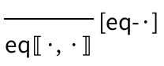
This function sets dc-for-text-size. See also judgment-form->pict.
语法
(relation->pict relation-name)
语法
(judgment-form->pict judgment-form-name)
4.8.2 Customization
parameter
(render-language-nts) → (or/c false/c (listof symbol?))
(render-language-nts nts) → void? nts : (or/c false/c (listof symbol?))
See also language-nts.
parameter
(non-terminal-gap-space gap-space) → void? gap-space : real?
Defaults to 0.
添加于package redex-pict-lib的1.1版本。
parameter
(extend-language-show-union show?) → void? show? : boolean?
Defaults to #f.
Note that the #t variant can look a little bit strange if .... are used and the original version of the language has multi-line right-hand sides.
parameter
(extend-language-show-extended-order ext-order?) → void? ext-order? : boolean?
Defaults to #f.
添加于package redex-pict-lib的1.2版本。
parameter
→
(or/c false/c (listof (or/c symbol? string? exact-nonnegative-integer?))) (render-reduction-relation-rules rules) → void?
rules :
(or/c false/c (listof (or/c symbol? string? exact-nonnegative-integer?)))
parameter
(rule-pict-style style) → void? style : reduction-rule-style/c
(or/c 'vertical 'compact-vertical 'vertical-overlapping-side-conditions 'horizontal 'horizontal-left-align 'horizontal-side-conditions-same-line (-> (listof rule-pict-info?) pict?))
The symbols indicate various pre-defined styles. The procedure implements new styles; it is give the rule-pict-info? values, one for each clause in the reduction relation, and is expected to combine them into a single pict?
函数
(rule-pict-info? x) → boolean?
x : any/c
函数
(rule-pict-info-arrow rule-pict-info) → symbol?
rule-pict-info : rule-pict-info?
函数
(rule-pict-info-lhs rule-pict-info) → pict?
rule-pict-info : rule-pict-info?
函数
(rule-pict-info-rhs rule-pict-info) → pict?
rule-pict-info : rule-pict-info?
函数
(rule-pict-info-label rule-pict-info) → (or/c symbol? #f)
rule-pict-info : rule-pict-info?
函数
(rule-pict-info-computed-label rule-pict-info)
→ (or/c pict? #f) rule-pict-info : rule-pict-info?
函数
(rule-pict-info->side-condition-pict rule-pict-info [ max-width]) → pict? rule-pict-info : rule-pict-info? max-width : real? = +inf.0
parameter
(arrow-space space) → void? space : natural-number/c
parameter
(label-space space) → void? space : natural-number/c
parameter
→
(or/c 'left-right 'up-down 'left-right/vertical-side-conditions 'up-down/vertical-side-conditions 'left-right/compact-side-conditions 'up-down/compact-side-conditions 'left-right/beside-side-conditions) (metafunction-pict-style style) → void?
style :
(or/c 'left-right 'up-down 'left-right/vertical-side-conditions 'up-down/vertical-side-conditions 'left-right/compact-side-conditions 'up-down/compact-side-conditions 'left-right/beside-side-conditions)
The 'left-right/vertical-side-conditions and 'up-down/vertical-side-conditions variants format side conditions each on a separate line, instead of all on the same line.
The 'left-right/compact-side-conditions and
'up-down/compact-side-conditions variants move side
conditions to separate lines to avoid making the rendered form wider
would be otherwise—
The 'left-right/beside-side-conditions variant is like 'left-right, except it puts the side-conditions on the same line, instead of on a new line below the case.
> (parameterize ([metafunction-pict-style 'left-right]) (render-metafunction add #:contract? #t))
> (parameterize ([metafunction-pict-style 'up-down]) (render-metafunction add #:contract? #t)) 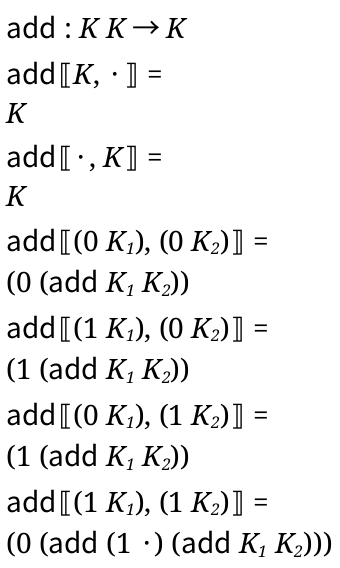
parameter
(metafunction-up/down-indent) → (>=/c 0)
(metafunction-up/down-indent indent) → void? indent : (>=/c 0)
The value is the amount to indent and it defaults to 0.
添加于package redex-pict-lib的1.2版本。
parameter
(delimit-ellipsis-arguments? delimit?) → void? delimit? : any/c
parameter
(white-square-bracket) → (-> boolean? pict?)
(white-square-bracket make-white-square-bracket) → void? make-white-square-bracket : (-> boolean? pict?)
It’s default value is default-white-square-bracket. See also homemade-white-square-bracket.
添加于package redex-pict-lib的1.1版本。
函数
(homemade-white-square-bracket open?) → pict?
open? : boolean?
添加于package redex-pict-lib的1.1版本。
函数
(default-white-square-bracket open?) → pict?
open? : boolean?
If these result in picts that are more than 1/2 whitespace, then 1/3 of the whitespace is trimmed from sides (trimmed only from the left of the open and the right of the close).
添加于package redex-pict-lib的1.1版本。
parameter
(linebreaks) → (or/c #f (listof boolean?))
(linebreaks breaks) → void? breaks : (or/c #f (listof boolean?))
If its value is a list, the length of the list must match the number of cases plus one if there is a contract that is rendered. Each boolean indicates if that case has a linebreak or not.
This parameter’s value influences the 'left/right styles only.
parameter
(sc-linebreaks) → (or/c #f (listof boolean?))
(sc-linebreaks breaks) → void? breaks : (or/c #f (listof boolean?))
Its value must have the same shape as the value of the linebreaks parameter.
This parameter’s value influences the 'left-right/beside-side-conditions style only.
添加于package redex-pict-lib的1.6版本。
parameter
→
(or/c #f (and/c (listof (or/c symbol? string? exact-nonnegative-integer?)) pair?)) (metafunction-cases cases) → void?
cases :
(or/c #f (and/c (listof (or/c symbol? string? exact-nonnegative-integer?)) pair?))
This parameter also controls how which clauses in judgment forms are rendered, but only in the case that judgment-form-cases is #f (and in that case, only the numbers are used).
parameter
→
(or/c #f (non-empty-listof (or/c symbol? string? exact-nonnegative-integer?))) (judgment-form-cases cases) → void?
cases :
(or/c #f (non-empty-listof (or/c symbol? string? exact-nonnegative-integer?)))
parameter
(judgment-form-show-rule-names show-rule-names?) → void? show-rule-names? : boolean?
添加于package redex-pict-lib的1.5版本。
parameter
(label-style style) → void? style : text-style/c
parameter
(grammar-style style) → void? style : text-style/c
parameter
(paren-style style) → void? style : text-style/c
parameter
(literal-style style) → void? style : text-style/c
parameter
(metafunction-style style) → void? style : text-style/c
parameter
(non-terminal-style style) → void? style : text-style/c
parameter
(non-terminal-subscript-style style) → void? style : text-style/c
parameter
(non-terminal-superscript-style style) → void? style : text-style/c
parameter
(default-style style) → void? style : text-style/c
The label-style parameter is used for reduction-rule labels. The literal-style parameter is used for names that aren’t non-terminals that appear in patterns. The metafunction-style parameter is used for the names of metafunctions. The paren-style parameter is used for parentheses (including “[”, “]”, “{”, and “}”, as well as “(” and “)”) and for keywords, but it is not used for the square brackets of in-hole decompositions, which use the default-style parameter. The grammar-style parameter is used for the “::=” and “|” in grammars.
The non-terminal-style parameter is used for the names of non-terminals. Two parameters style the text in the (optional) “underscore” component of a non-terminal reference. The first, non-terminal-subscript-style, applies to the segment between the underscore and the first caret (^) to follow it; the second, non-terminal-superscript-style, applies to the segment following that caret. For example, in the non-terminal reference x_y^z, x has style non-terminal-style, y has style non-terminal-subscript-style, and z has style non-terminal-superscript-style. The only exception to this is when the subscript section consists only of unicode prime characters (′), in which case the non-terminal-style is used instead of the non-terminal-subscript-style.
The default-style parameter is used for parenthesis, the dot in dotted lists, spaces, the “where” and “fresh” in side-conditions, and other places where the other parameters aren’t used.
修改于package redex-pict-lib的1.4版本：Use paren-style for keywords.
parameter
(label-font-size) → (and/c (between/c 1 255) integer?)
(label-font-size size) → void? size : (and/c (between/c 1 255) integer?)
parameter
(metafunction-font-size) →
(and/c (between/c 1 255) integer?) (metafunction-font-size size) → void?
size :
(and/c (between/c 1 255) integer?)
parameter
(default-font-size) → (and/c (between/c 1 255) integer?)
(default-font-size size) → void? size : (and/c (between/c 1 255) integer?)
parameter
(reduction-relation-rule-separation sep) → void? sep : (parameter/c real?)
Horizontal and compact-vertical renderings add this parameter’s amount to (reduction-relation-rule-extra-separation) to compute the full separation.
parameter
→ (parameter/c real?) (reduction-relation-rule-extra-separation sep) → void? sep : (parameter/c real?)
添加于package redex-pict-lib的1.7版本。
parameter
→ (parameter/c real?) (reduction-relation-rule-line-separation sep) → void? sep : (parameter/c real?)
添加于package redex-pict-lib的1.7版本。
parameter
(curly-quotes-for-strings on?) → void? on? : boolean?
Defaults to #t.
parameter
(current-text proc) → void? proc : (-> string? text-style/c number? pict?)
函数
(arrow->pict arrow) → pict?
arrow : symbol?
函数
(set-arrow-pict! arrow proc) → void?
arrow : symbol? proc : (-> pict?)
parameter
→ (-> string? number? (values number? number? number? number?)) (white-bracket-sizing proc) → void? proc : (-> string? number? (values number? number? number? number?))
The procedure accepts a string that is either "[" or "]", and it returns four numbers. The first two numbers determine the offset (from the left and from the right respectively) for the second square bracket, and the second two two numbers determine the extra space added (to the left and to the right respectively).
(λ (str size) (let ([inset-amt (floor/even (max 4 (* size 1/2)))]) (cond [(equal? str "[") (values inset-amt 0 0 (/ inset-amt 2))] [else (values 0 inset-amt (/ inset-amt 2) 0)])))
where floor/even returns the nearest even number below its argument. This means that for sizes 9, 10, and 11, inset-amt will be 4, and for 12, 13, 14, and 15, inset-amt will be 6.
parameter
→ (parameter/c exact-nonnegative-integer?) (horizontal-bar-spacing space) → void? space : (parameter/c exact-nonnegative-integer?)
parameter
(metafunction-gap-space gap-space) → void? gap-space : real?
Defaults to 2.
添加于package redex-pict-lib的1.7版本。
parameter
(metafunction-rule-gap-space gap-space) → void? gap-space : real?
Defaults to 2.
添加于package redex-pict-lib的1.7版本。
parameter
(metafunction-line-gap-space gap-space) → void? gap-space : real?
Defaults to 2.
添加于package redex-pict-lib的1.7版本。
parameter
(metafunction-fill-acceptable-width width) → void? width : real?
For example, if the side conditions of a particular rule in a metafunction are all shorter than the rule itself, metafunction-fill-acceptable-width has no effect. In contrast, if the rule itself is shorter than the side conditions and narrower than the space available to render (in a document for printing, for example), setting metafunction-fill-acceptable-width can help. Setting it to the available width causes rendering to use the available horizontal space for joining side conditions.
> (define-metafunction nums [(f K_1) · (where (0 K_2) K_1) (where (1 K_3) K_2) (where (0 K_4) K_3) (where (1 K_5) K_4) (where (1 ·) K_5)] [(f K) (0 ·)])
> (parameterize ([metafunction-pict-style 'left-right/compact-side-conditions]) (render-metafunction f)) 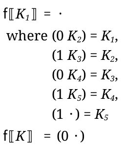
> (parameterize ([metafunction-pict-style 'left-right/compact-side-conditions] [metafunction-fill-acceptable-width 300]) (render-metafunction f)) 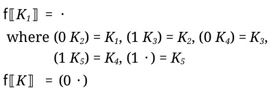
> (parameterize ([metafunction-pict-style 'left-right/compact-side-conditions] [metafunction-fill-acceptable-width 400]) (render-metafunction f)) 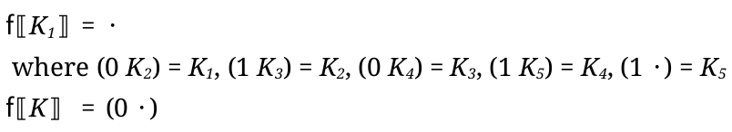
添加于package redex-pict-lib的1.11版本。
parameter
→ (pict? pict? . -> . pict?) (metafunction-combine-contract-and-rules combine) → void? combine : (pict? pict? . -> . pict?)
The default combining function uses vl-append with a separation of (metafunction-rule-gap-space).
添加于package redex-pict-lib的1.7版本。
parameter
→ (parameter/c (-> (listof pict?) pict?)) (relation-clauses-combine combine) → void? combine : (parameter/c (-> (listof pict?) pict?))
parameter
(metafunction-arrow-pict) → (parameter/c (-> pict?))
(metafunction-arrow-pict make-arrow) → void? make-arrow : (parameter/c (-> pict?))
parameter
(where-make-prefix-pict) → (parameter/c (-> pict?))
(where-make-prefix-pict make-prefix) → void? make-prefix : (parameter/c (-> pict?))
parameter
(where-combine) → (parameter/c (-> pict? pict? pict?))
(where-combine combine) → void? combine : (parameter/c (-> pict? pict? pict?))
parameter
(current-render-pict-adjust) → (pict? symbol? . -> . pict?)
(current-render-pict-adjust adjust) → void? adjust : (pict? symbol? . -> . pict?)
The set of roles is meant to be extensible, and the currently provided role symbols are as follows:
'lw-line —
a line with a render term (including any term that fits on a single line) 'language-line —
a line on the right-hand side of a production in a language grammar. 'language-production —
a production (possibly multiple lines) within a language grammar. 'side-condition-line —
a line within a side condition for a reduction-relation rule or metafunction rule 'side-condition —
a single side condition with a group of side conditions for a reduction-relation rule or a metafunction rule 'side-conditions —
a group of side conditions for a reduction-relation rule or a metafunction rule including the “where” prefix added by (where-make-prefix-pict) 'reduction-relation-line —
a single line within a reduction-relation rule 'reduction-relation-rule —
a single rule within a reduction relation 'metafunction-contract —
a contract for a metafunction 'metafunction-line —
a line within a metafunction rule 'metafunction-rule —
a single rule within a metafunction 'metafunctions-metafunction —
a single metafunction within a group of metafunctions that are rendered together
添加于package redex-pict-lib的1.7版本。
4.8.3 Removing the Pink Background
When reduction rules, a metafunction, or a grammar contains unquoted Racket code or side-conditions, they are rendered with a pink background as a guide to help find them and provide an alternative typesetting for them. In general, a good goal for a PLT Redex program that you intend to typeset is to only include such things when they correspond to standard mathematical operations, and the Racket code is an implementation of those operations.
To replace the pink code, use:
语法
(with-unquote-rewriter proc expression)
The proc must match the contract (-> lw? lw?). Its result should be the rewritten version version of the input.
语法
(with-atomic-rewriter name-symbol string-or-thunk-returning-pict expression)
name-symbol is expected to evaluate to a symbol. The value of string-or-thunk-returning-pict is used whenever the symbol appears in a pattern.
> (define-language lam-lang (e (lambda (x) e)))
> (with-atomic-rewriter 'lambda "λ" (render-term lam-lang (term (lambda (x) e)))) 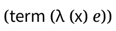
语法
(with-atomic-rewriters ([name-symbol string-or-thunk-returning-pict] ...) expression)
添加于package redex-pict-lib的1.4版本。
语法
(with-compound-rewriter name-symbol proc expression)
name-symbol is expected to evaluate to a symbol. The value of proc is called with a (listof lw), and is expected to return a new (listof (or/c lw? string? pict?)), rewritten appropriately.
The list passed to the rewriter corresponds to the lw for the sequence that has name-symbol’s value at its head.
The result list is constrained to have at most 2 adjacent non-lws. That list is then transformed by adding lw structs for each of the non-lws in the list (see the text just below the description of lw for a explanation of logical space):
If there are two adjacent lws, then the logical space between them is filled with whitespace.
If there is a pair of lws with just a single non-lw between them, a lw will be created (containing the non-lw) that uses all of the available logical space between the lws.
If there are two adjacent non-lws between two lws, the first non-lw is rendered right after the first lw with a logical space of zero, and the second is rendered right before the last lw also with a logical space of zero, and the logical space between the two lws is absorbed by a new lw that renders using no actual space in the typeset version.
One useful way to take advantage of with-compound-rewriters is to return a list that begins and ends with "" (the empty string). In that situation, any extra logical space that would have been just outside the sequence is replaced with an lw that does not draw anything at all.
> (with-compound-rewriter 'eq (λ (lws) (define lhs (list-ref lws 2)) (define rhs (list-ref lws 3)) (list "" lhs " = " rhs "")) (render-judgment-form eq)) 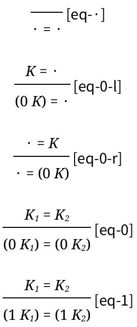
语法
(with-compound-rewriters ([name-symbol proc] ...) expression)
4.8.4 LWs
struct
(struct lw ( e line line-span column column-span unq? metafunction?) #:extra-constructor-name make-lw #:mutable)
e :
(or/c string? symbol? pict? (listof (or/c (symbols 'spring) lw?))) line : exact-positive-integer? line-span : exact-positive-integer? column : exact-positive-integer? column-span : exact-positive-integer? unq? : boolean? metafunction? : boolean?
The values of the unq? and metafunction? fields, respectively, indicate whether the lw represents an unquoted expression or a metafunction application. See to-lw for the meanings of the other fields.
函数
e :
(or/c string? symbol? pict? (listof (or/c 'spring lw?))) line : exact-positive-integer? line-span : exact-positive-integer? column : exact-positive-integer? column-span : exact-positive-integer?
语法
(to-lw arg)
Each sub-expression corresponds to its own lw, and the element indicates what kind of sub-expression it is. If the element is a list, then the lw corresponds to a parenthesized sequence, and the list contains a lw for the open paren, one lw for each component of the sequence and then a lw for the close parenthesis. In the case of a dotted list, there will also be a lw in the third-to-last position for the dot.
For example, this expression:
(a)
becomes this lw (assuming the above expression appears as the first thing in the file):
(build-lw (list (build-lw "(" 0 0 0 1) (build-lw 'a 0 0 1 1) (build-lw ")" 0 0 2 1)) 0 0 0 3)
If there is some whitespace in the sequence, like this one:
(a b)
then there is no lw that corresponds to that whitespace; instead there is a logical gap between the lws.
(build-lw (list (build-lw "(" 0 0 0 1) (build-lw 'a 0 0 1 1) (build-lw 'b 0 0 3 1) (build-lw ")" 0 0 4 1)) 0 0 0 5)
In general, identifiers are represented with symbols and parenthesis are represented with strings and picts can be inserted to render arbitrary pictures.
The line, line-span, column, and column-span correspond to the logical spacing for the redex program, not the actual spacing that will be used when they are rendered. The logical spacing is only used when determining where to place typeset portions of the program. In the absence of any rewriters, these numbers correspond to the line and column numbers in the original program.
The line and column are absolute numbers from the beginning of the file containing the expression. The column number is not necessarily the column of the open parenthesis in a sequence – it is the leftmost column that is occupied by anything in the sequence. The line-span is the number of lines, and the column span is the number of columns on the last line (not the total width).
When there are multiple lines, lines are aligned based on the logical space (i.e., the line/column & line-span/column-span) fields of the lws. As an example, if this is the original pattern:
(all good boys deserve fudge)
then the leftmost edges of the words "good" and "deserve" will be lined up underneath each other, but the relative positions of "boys" and "fudge" will be determined by the natural size of the words as they rendered in the appropriate font.
When 'spring appears in the list in the e field of a lw struct, then it absorbs all of the space around it. It is also used by to-lw when constructing the picts for unquoted strings. For example, this expression
,x
corresponds to these structs:
(build-lw (list (build-lw "" 1 0 9 0) 'spring (build-lw x 1 0 10 1)) 1 0 9 2)
and the 'spring causes there to be no space between the empty string and the x in the typeset output.
函数
language/nts : (or/c (listof symbol?) compiled-lang?) lw : lw?
This function sets dc-for-text-size. See also lw->pict.
This function does not set the dc-for-text-size parameter. See also render-lw.
函数
(just-before stuff lw) → lw?
stuff : (or/c pict? string? symbol?) lw : lw?
函数
(just-after stuff lw) → lw?
stuff : (or/c pict? string? symbol?) lw : lw?
函数
(fill-between stuff lw-before lw-after) → lw?
stuff : (or/c pict? string? symbol?) lw-before : lw? lw-after : lw?
If lw-before and lw-after are not on the same line, fill-between raises an error.
4.8.5 Macros and Typesetting
When you have a macro that abstracts over variations in Redex programs, then typesetting is unlikely to work without some help from your macros.
> (define-syntax-rule (def-my-lang L prim ...) (define-language L (e ::= (λ (x) e) (e e) prim ... x) (x ::= variable-not-otherwise-mentioned))) > (def-my-lang L + - *) > (render-language L) eject: lines going backwards (current-line 2 line 1 atom
#<pict> tokens (#(struct:string-token 0 1 "*" swiss)
#(struct:pict-token 1 0 #<pict>) #(struct:string-token 0 1
"-" swiss) #(struct:pict-token 1 0 #<pict>)
#(struct:string-token 0 1 "+" swiss) #(struct:pict-token 0 0
#<pict>) #(struct:spacer-token 0 0)))
One simple, not-very-general work-around is to just avoid typesetting the parts that come from the macro arguments. For example if you move the primitives into their own non-terminal and then just avoid typesetting that, Redex can cope:
(define-syntax-rule (def-my-lang/separate-prims L prim ...) (define-language L (e ::= (λ (x) e) (e e) prims x) (prims ::= prim ...) (x ::= variable-not-otherwise-mentioned)))
> (render-language L #:nts '(e x)) 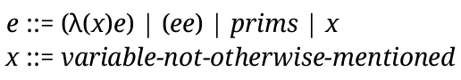
You can also, however, exploit Racket’s macro system to rewrite the source locations in a way that tells Redex where the macro-introduced parts of the language are supposed to be, and then typesetting will work normally. For example, here is one way to do this with the original language:
(define-syntax (def-my-lang stx) (syntax-case stx () [(_ L a ...) (let () (define template #'(define-language L (e (λ (x) e) (e e) HERE x) (x variable-not-otherwise-mentioned))) (car (let loop ([stx template]) (syntax-case stx (HERE) [HERE (let loop ([as (syntax->list #'(a ...))] [pos (syntax-position stx)] [col (syntax-column stx)]) (cond [(null? as) '()] [else (define a (car as)) (define span (string-length (symbol->string (syntax-e a)))) (define srcloc (vector (syntax-source stx) (syntax-line stx) col pos span)) (cons (datum->syntax a (syntax-e a) srcloc a) (loop (cdr as) (+ pos span 1) (+ col span 1)))]))] [(a ...) (list (datum->syntax stx (apply append (map loop (syntax->list #'(a ...)))) stx stx))] [a (list stx)]))))]))
> (render-language L) 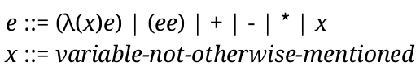